| 君を探す空の下で～アンドゥーシャの道程～ 君空シリーズ | |
| 月夜野スミレ | |
| (2015) | |
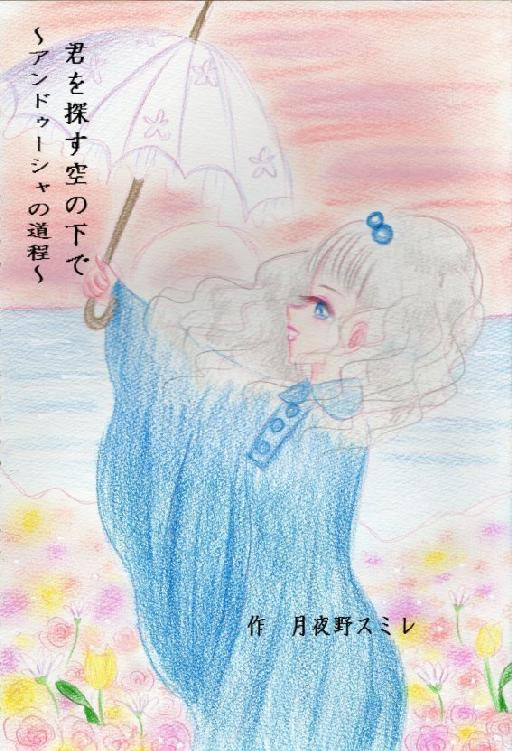
第一章 戻れる場所があるのならば
誰かが言った。この世界は異常だと。誰かが言った。この世界は愛に満ちてると。私はそんな言葉に蓋をしてあなたに口づける。私は必要とされて、私を愛して、私に反して。
私が最初に覚えたのは言葉だった。私は愛されていた。愛されていたが知りはしなかった。私は無知だった。何げない言葉ですべては終わりを迎えた。終わりを迎えそして又始まる。
次にいたのは古巣となった小さな村。私はそこで多くのものを学び戦いそして歪んだ。その師はラインハルト。風の騎士ラインハルト。
「アンドゥーシャ！アンドゥーシャ！！どこですか！お返事しなさい！！」
私の名前をあのぺてん師が叫んでいる。私は気にもせず風車の屋根で昼寝を決め込んだ。まだ眠い・・・・
「早く雨季がこないかな・・・・」
そう呟き私は風見鶏をつついた。鶏は私なんていないようにくるくると風が吹きつけるままに回り続ける。
私はふうとため息を風見鶏に吹き付ける。鶏はくるくると舞う。
私たちも似たようなものかとまたため息だ。同じことしか起こらない日々、練習に練習に練習・・・・
「終わりはないっていやあね・・・・」
私、アンドゥーシャは女騎士なので皆のために戦うのが使命だ。けれどもこの世界には敵が存在せず私の力はなんの役にも立たず、ただ飯食らいだ。さすがにこの年まで何も戦績を残せていないのは大変まずいわ・・・・
でも別の意味でのあだ名ならつけてもらった！
「はっ！」
銀髪をなびかせ日傘を差して風車から飛び降りる。私の足跡は猫の耳にも届くまい。私の体は緩やかに着地する。その足で私は昼休みにたむろしている農家のみなさんの集まりに顔を出す。納屋で食事の最中だった。
「やっほ！」
「おぅ・・・・来たよ。カードマスターが・・・・」
「今度は負けねえかんな！！」
息巻く男たち。それを見てあきれながらも私の分のお茶の用意をしてくれるおかみさん。みんないい人たちだ。案外スケベなところもあるけど。
私は木箱を足でひっくり返しそこに陣取る。
「今日は何して遊ぶ？」
「んんん？カードでなら何でも来いってか？」
「お、おれ、昨日、自分で作ってきたんだ。これでやろう」
男の一人が胸ポケットからカードを出してくる。
私は即決する。
「いいよ」
そんな私に嘆息を上げる。
「おいおい、いかさまありでいいのかよ？」
「俺を信じられねえのかよ！！」
「だっておれもやんのよ？少しは疑いたくなるわ・・・・」
「ルールは？」
こうしておっさんたちは食事と仕事の間の遊びに私を加えさせてくれた。幾場かの時間がすぎ・・・・
「あ～～まけか～！」
「ちょろい、ちょろい」
「な～アンドゥーシャちゃん、こつ、ちょっとだけ教えてくれないか？」
私は少し考えこう答えた。
「風が教えてくれるわ」
私は戦利品として若いりんごをかじりながらつぶやく。
「つまんない」
もっと強い人間と対決してみたい。けれど・・・けれど・・・・ラインハルトの言葉が私の思考をストップさせる。
―人間を信じるな―
わかってる、わかってるよ、ラインハルト。あの人たちだって私の正体に気づけば教会のみんなと同じになっちゃう。私は頭を切り替えひたすら歩いていく。すると男女の喧嘩に遭遇する。
「・・・・・」
私は少し風向きをチェックする。うん問題ない。
「やほぅ！」
「・・・・・？？」
｢あ・・・・孤児院のアンドゥーシャちゃん？｣
片方の女性には面識があった。確かもうすぐ結婚するのだとはしゃいでいたサティさんでした。彼女は少し自分が太めなのがコンプレックスで私を見るたびにそれを思い出すのがつらいと思っているようだ。気にしなくていいのになあ。
ということは横にいるのが婚約者さんだろうか？
｢お前、結婚するのに子供がいらないって言ったのはよくない！｣
婚約者さんは私のことを無視して続ける。
｢子供は宝なんだぞ！俺は何人でも育ててみせる！！｣
では婚約者さんは何をしているのかチェックしてみましょう～
おう、見えます。婚約者さんが汗水たらしてレンガを作ったり畑を耕したりしてるのが見えま～す。どうやら土木と畑仕事の両立で暮らしてるみたい。なるほどなるほど、食料を自前に調達できるから子供を育てられるって自信がわくわけね・・・・
「そこまで言える自信があればいいんじゃない？｣
私がぼそっと言った言葉で婚約者さんはさらに増長する。
｢そうだ！この子の言うとおりだ！俺は体力もあるし畑も子供に分けてやる！きっとおれたちの両親も満足できるはずだ！昨日まではあんなに喜んでいたじゃないか！！それなのになんで今日は結婚を考えたいなんて言うんだ！！｣
対してサティさんは・・・・な～んかこう～ごちゃごちゃしてよく分からない。
サティさんは簡素なスカートをぎゅっと握りしめ唇をかみしめてる。う～ん、これ以上ここで粘ってもいいことなさそう。私はサティさんに耳打ちする。
｢だれか呼んできてあげる｣
「いいの・・・本当にいいの・・・」
私はサティさんの制止を振り切り彼女の家へと向かった。
サティさんは少し顔を上げた。婚約者さんは詰め寄った。
「やっとなんか言う気になったか？」
「そ、そうじゃなくて・・・・」
駆けていくアンドゥーシャの後姿を見ながらこうつぶやいた。
「あの子、私の家の場所、知ってるのかしら・・・・」
私はささやかな式場の準備に追われている一軒の家に入っていく。皆忙しそうで見物人も多く出入りはいまなら自由に行けそうだ。そこらに明日点燈させる蜜蝋燭のセットやリースなど飾りが置いてある。決して大きくない家の奥で老夫婦がこじんまりと座っている。
「やっほー」
私はあいさつする。おじさんは無言で大きな手で私をなでる。おばさんは私の傘をつついてくる。
「お嬢ちゃん、傘は玄関に置くものだよ」
「それはごめんなさい、わたし、サティさんが困ってるので言いつけにきたの」
すると二人はふうと憂鬱そうになる。
「だからもっと早く言えばよかったんだ！！」
「あなた、そんなこと言ってもあなただってなかなか踏ん切りつかなかったじゃありませんか。何でも人のせいにして」
「俺は娘がかわいそうでいえなかったんだ！」
おじさんの悲痛な怒声とともに私の心に数が数えられた。
～一つだめ二つだめ三つよし四つだめ～
これはなんの数？私は聞きたかったのだけどもう二人はぐつぐつと嘆きの炎で私を寄らせなかった。
仕方がないので庭でテーブルを運んでいる口の軽そうなおばさんを捕まえた。
「ねえ、この家の～一つだめ二つだめ三つよし四つだめ～ってなに？」
おばさんはびっくりした様子で私を裏庭に連れていく。
「シィ～・・・・それはこの家では禁句よ！！めでたい時なんだから・・・・でもね教えてあげる・・・それは・・・ごにょごにょ」
うぅ～ん・・・・それはちょっと・・・・この私も言っていいのか分からない・・・・けどな～あのままならすぐに破局だもんな。何とかしてみよう！！
私はサティさんの家を飛び出し教会へと戻ってきた。忍び足で鍵を取り出す。そして扉をあける。そこには一冊の本があった。
「・・・教えてラインハルト。」
答えは返ってきた。―男女間は二者間の問題で彼らで決めさせねば堂々巡りである―
「・・・・・・」
つまり・・・・言えってことか・・・婚約者さん、驚くだろうな・・・・
秘密の部屋から出てくると二人がこちらに向かってくる。ああ、結婚するならこの教会使うよね。まだ言い合っているようだ。
私はあることを思いつく。私は婚約者さんの腕をつかんだ。
「あ？」
「来て、二人とも・・・・」
そこは墓地、教会の後ろにある。
「おい、さっきの子かよ。お兄さん達忙しいの」
私は構わず小さな三つのお墓に花を添えた。
「小さいでしょう？」
私はお墓を指でさしていく。
「一人目、二人目」
次はサティさんを差す。
「三人目」
最後に隅っこのやはり小さなお墓を差す。
「四人目」
婚約者さんは困惑した様子だった。
「サティさんの兄弟だよ。あいさつして・・・・」
「あ、え、う？」
「サティさんも昨日知ったんだよ。本当は四人兄弟。でもサティさん以外流産しちゃった。サティさんのお母さん流産しやすい人だったんだよ。サティさんもこの遺伝があるのかもしれない。子供好きな婚約者さんは子供いっぱいほしがってた。だから結婚をやめようって言ってたんだよ。」
サティさんは泣き出してしまう。アンドゥーシャは深い胸の痛みを感じた。でも・・・・傷つくのを恐れたら何もできない！
婚約者さんは少し息を吐く。
「俺はサティ、お前と結婚してお前の子供がほしいんだ！誰だって良いわけねえだろ！でも・・・・そういう体質なのに子供産めって言えねえよ。きっとおれたち二人でも幸せになれるよ。おれがそんな場所を作ってやる。そんな小さなことで別れるなんて言うな・・・・な」
婚約者さんは持っていた砂糖菓子をお墓に供えた。
「幸せにしますからサティをください！！」
二人は抱き合って泣いてキスをした。
私はそれを確認するとまた昼寝の続きをしに風車へと戻っていった。明日は結婚式か・・・・
「いいね～結婚。素敵な恋っていいわ～・・・・・ってあれ？なんか忘れているような・・・・・」
日傘をステッキのように振り回して何かを思い出そうとするが・・・・・
「アンドゥーシャはいったいどこですか！！」
誰かが村を走り回っていた。
私は唄を聴きながらこの世へ生まれ出た。その唄はこの世界を巡り巡り一年を告げる。最初に愛した私だけの唄。花が咲き鳥は歌う。私は愛されてこの世へ誕生したのだった。私は求める。一輪の唄を探しに奔る。
私が生まれたのは北の村だった。両親は私が生まれてとても喜んでくれた。私も両親が大好きだった。きっとこのまま私たちは暮らすのだと疑うことなく一日を過ごしていた。私には両親の記憶は少ない。
一年の時を告げる花の季節・・・・世界は唄に満ちる。私は幸せだった。彼女は私を抱きしめ愛してるとささやいてくれる。あなたはかけがいのない存在だと何度も何度も・・・・私も言葉にはできずとも愛してると答えた。花の季節だけの逢瀬・・・
言葉を覚えてしゃべれるようになってからすべては瓦解した。私は他人と違った。私はそんなことも知らずにすくすくと成長した。私は愛されていた。
幼い私は視えたものを口にした。
「どーしてぱぱ、ほかのおんなのひとといるのー？」
父親の血の気が引いた。母が父に食って掛かる。父は知らぬ存ぜぬの一点張り、母は苛立ちりんごを剥いていた刃物を見る。そうただ見るだけだった。すぐにその行動は理性によって抑えられた。母は代わりに言葉のナイフを選び取る。まだ何も行動もしていない。けれども幼いアンドゥーシャの口からは・・・・
「どーしてまま、ぱぱをいじめるのー？」
母は私を化け物のように見て手に持っていたナイフを落とした。母はアンドゥーシャが普通ではないと気づいてしまった。
かわいそうなお母様、そのままどこかへ消えていった。
お父様はすぐに新しいお母様を連れてきた。けれど私は何が起こったのか分からずに覚えたての言葉をしゃべり続ける。
「どーしてまま、あたらしいまま、ころすの？」
「なんでぱぱ、おうちにかえりたくないっていうの？」
「じさつってなに？」
「まま、あたらしいままきらいだって！」
「ぱぱ、あたらしいままきらい？」
家庭は崩壊した。きっかけが父親の不貞が原因だったとしてもアンドゥーシャは自らが救われる選択を次々に壊していった。残ったのは父親とアンドゥーシャだけだった。
父親はもうしゃべるな、しゃべらないでくれと懇願する。そして私は学んだ。感じたものを口にするなと。
それでも私は私を捨てるという考えを思いついては振り払う父が好きだった。これだけは覚えてる、やさしい人だった。継母が泣いているのを見過ごせず過ちを犯した父様。
泣いて泣いて彼女たちはいつの間にか消えていった。
継母もとっくにいなくなり二人で過ごす４歳の花の季節。また唄が聞こえ私はよくハミングした。彼女と私は一緒に歌う。彼女は世界のすべての唄を知っていた。私は何度も手を叩いて喜ぶ。
歌う私を置いて家で大人たちが話し合う。
「・・・・では後は私たちが・・・・」
「よろしくお願いします。でも・・・でもきっとあの子はすごい水使いになる！けれど俺はもう育てることもできない。お願いします！！」
父親は頭を深く深く下げる。ほかの女にうつつを抜かした情けない父様、自分ではたった一人の幼子もそだてられない不器用な父様。もう顔も思い出すこともできない。私と生きる選択ができなかった父、それでも異能の力をふるう私にごく自然に接してくれた。私は父が好きだった。
「ぱぱ？」
彼女が部屋をのぞきこむ私の目をふさぐ。そうすると私の幼い耳には彼女の歌しか聞こえなかった。
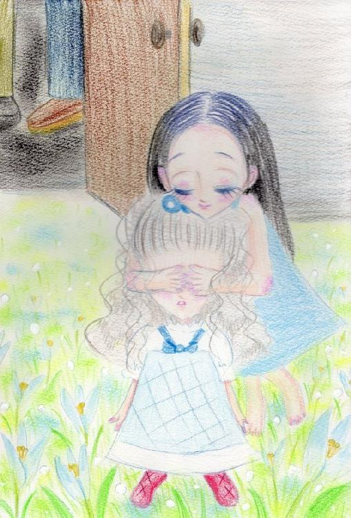
私はシスターと一緒に馬車へと乗り込む。幼い私は馬車が初めてでうれしかった。馬車が離れていくごとに父が心の重みから解放されることがうれしかった。
父はいつまでも馬車を見送っていた。風向きが変わり馬車の追い風が私の頬を撫ぜつけるのをやめてしまう。もう父の声は聞こえなかった。
一週間で終わる花の季節。目的地に着くころには花が散り始めこの世界は元の荒野に徐々に戻り始めた。私はまた彼女の歌を口ずさむ。彼女はうれしそうに歌う。私も歌う。たくさん彼女は唄を知っていた。私はうれしくてうれしくて何度も手を叩く。
ふと彼女が私の耳元で囁く。
私もそれに答える。
「うん、おやすみ～」
私が何を言っているのか誰もわからない。私と彼女の秘密の会話。私たちはいつまでも歌い続ける、これはそんな話。
寺院、教会、といっても一つの村だけで崇拝されている小さなものだった。祀られているのも大したものじゃない。一つの遺物だった。
寺院は村の五分の一を占めた面積を持ち幼子の私は少し怖かった。思わずシスターの服を握りしめる。彼女からは悪意を感じ取れなかったからだ。彼女は言う。
「みんないい人たちばかりですよ。さあここがあなたの新しいおうちです」
私の頭をなでつけ彼女は笑った。その笑顔がうれしくて私は彼女を呼んだ。
「うん、アントーネ！！」
シスターたちはぎくりとした。誰も彼女の名前を呼ばなかった。水使いの力の度合いのテスト用にわざと名乗らずにいたのだがアンドゥーシャは答えてしまった。
異端者は消される。それが世の常だった。もはや水使いはこの忘れた世界には必要不可欠なほど学問として調べられている。そう、水の力を操る水使いたちはこの忘れた世界には日常の一コマでしかなかった。
だがアンドゥーシャはちがった。それでも幸いなことに寺院は異端を欲していた。
アントーネは薄く笑い幼子をなでる。
「そうです。私はアントーネ。よろしくね、アンドゥーシャ・・・・私たち同じアンね。仲よくしましょ」
彼女の眼は先ほどと違い好奇心で満ち足りていた。その気持ちが私の心に流れ込み私はなにやら気持が悪く逃げたかった。でもわかってしまった。私のこの力は皆と違うのだと・・・・もうどこにも逃げられやしない。私は化け物だった。
彼らはどう調べようか、どこまでの力なのかそればかりで私は出されたミルクも手につけずにじっと通された部屋で子供用ではない大きめの椅子で足をばたつかせていた。アンドゥーシャにとって家族は両親と彼女だけだった。幼いアンドゥーシャはきっと三人が迎えに来てくれると信じた。
「きっとだれかきてくれるよ」
そう呟いた。だって父様は安堵していたじゃない。彼女はまた来年会いに来るって約束してくれた。消えてしまった母様はいつも私を想ってくれていた。これだけあれば何の問題もない。自分は愛されている。
アンドゥーシャはあまりにも純粋無垢だった。アンドゥーシャは力は皆持っていると思っていたがそれはただの幻想。この忘れた世界の住人はほとんどが普通の人間だった。
寺院の人間はアントーネをお付きのシスターにし、水使いなのか調べていたがその要領は悪かった。何せ水使いで無いと判別することはまるで重箱の隅をつつくような作業だった。
アントーネはやさしく根気よくテストを続ける。
「さあ、アン。この水を動かせるかな？」
たらいに張った水、アンドゥーシャは手も触れずに波を作った。
「じゃあこんなことできるかしら？」
アントーネはたらいの水をまるで毬のようにポンポンと手で丸く作り上げた。
アンドゥーシャは作ろうとするが烈風が吹きすさび、たらいの水をひっくりかえしてしまう。
「つめたーい！！」
アントーネは濡れた自身などほっておきアンドゥーシャの顔を布で拭いてくれた。アントーネはテストのときは厳しい顔をしていた。そして精神は幼いアンドゥーシャにとって理解不能な取捨選択を行っていた。だからアンドゥーシャはテストが大っきらいだった。
「もうやだ！！これきらい！！」
しかしアンドゥーシャにそれを伝えるのは当時四歳児だったのだから無理でそれを理解するほどアントーネも付き合いが長くなかった。
「みずつかいってそんなにたいせつ？」
アンドゥーシャの問いにアントーネは深く頷く。
「この世界は決定的に水不足です。だから我々は力があるものを育成するのです。さあ、続けましょう。ね、いい子だから」
私は頭をひねった。水使いとはなんだろう？
「水使いは水を操り、水を呼び、水の記憶を探り、人々のために働く人です」
私は首をひねった。
「水を操るってこう？」
私は指を動かす。烈風が起こり水が巻き上がる。
アントーネはそれを見て確信した。アンドゥーシャは水使いではない。それをアントーネは隠し笑顔で続けた。
「今日はお疲れでしょう？おやすみなさい。いい夢を・・・・」
私はベッドの中で深く眠りについた。
その夜教会の人間たちはアントーネの報告を聞きざわめく。
「水使いではないと？」
「そうです！見分けがつきにくいですが水使いの能力とは一線を画します。」
「ではアンドゥーシャはなんだ？」
「邪悪なる炎使いではないだろうな。」
「いいえ、彼女こそ私たちが探していた人間、ラインハルトを継ぐ騎士です。」
「幸いなるかな風の騎士、ラインハルト」
アントーネに古い鍵が渡される。
「彼に逢わせてやれ・・・・・何しろ我々も知らぬことのほうが多い。一つ一つ調べるしかあるまい」
「アンドゥーシャの行き先に光があらんことを・・・・」
私に光はなく、闇もない。風は強く強くたたきつける。それでも生きるしかなかった。ある日気がついた。風はやまない。風の向こうには風しかないのだと。そうラインハルトは言う。私はラインハルトが怖かった。いつも怒っていたラインハルト、いつも疑っていたラインハルト。かわいそうな風の騎士。
教会、寺院と呼ばれるこのカビ臭い場所に連れられて一年が過ぎた。そこには多くの子供がいて私と同じように水使いの力を操ることを学んでいた。私は劣等生だった。皆と同じようにうまく水を操ることができずに水を大気中から集めることもできずに失笑を買う毎日。
やり方はわかっているのに私にそれを実行できる力なんてなかった。アントーネは私の頭を撫ぜる。
「大丈夫、でも水使いの力を使うように・・・・まねできるようになればあなたはどこでもやっていけるわ。あなたならできる。さあ、がんばって！」
そんな応援も私の心の不安を拭いされなかった。私は夜になると誰にも気づかれないように泣いた。みんなができて私にはできない。それが悲しくてここに居たくなかった。
アンドゥーシャは五歳になろうとしていた。
あれからお父様は村を訪れることはなかった。逢いたかった。でもどこを行ったら元のあの村へ帰れるのかさえ私に見当はつかなかった。幼い子供の私にできることは練習して水使いの力を習得することだった。私はようやく水を動かすことを我流でできるようになった。そのやり方は一緒に練習している子供たちのイメージとはかけ離れていた。私の場合は水をつかんで動かすイメージだがほかの水使いたちは水そのものを変形させて動かしているようだった。
アントーネが私を連れ出した。寺院の裏側にある錆びた扉。鍵をあける。アンドゥーシャは恐る恐る中を覗き込んだ。地下室に続く風が私の頬を撫ぜる。
これがラインハルトの出会いだった。
「どうしてお前らはそうもばかげてるんだ！」「どうしてだれも理解されない！！」「やめてくれ・・・俺はそんな人間じゃない！」「馬鹿だな・・・俺はバカだ。最後にこんなことを気付くなんて、幸せになってくれ・・・・そしてありがとう。君に会えてよかった・・・」
「きゅう！！」
私は卒倒した。誰かが私に呼び続けた。その声はアントーネでもなく彼女でもなくお父様でもないだれかだった。アントーネはアンドゥーシャを優しく抱きとめる。私の意識は薄れる中アントーネの声を聞いた。
「・・・・・やはり、そうなのね・・・」
これが私とラインハルトの初めての出会いだった。
それから私はアントーネに連れられたびたびあの地下室に通うことになった。私は恐る恐る階段を下る。地下にはただの本棚があった。アントーネはやさしく私にそれを読むことを勧める。私は迷ったが言われたままに本を開いた。彼は語り始める。晩御飯についてだった。
「？？」
アントーネがささやく。
「アン、読んでごらん・・・」
「き、今日は・・・パンをた、た、べた・・・バター付きトーストうまい・・・・」
アントーネが体勢を崩して大仰にこける。アントーネも私が読んだページを読もうと試みるが無駄だった。ひどい癖字に誤字それがびっしり斜め横に行ったり来たりして書いてあるのだ。読むこともかなわずアントーネは頭を抱える。
私は続けて読む。
「怒りのっ・・・・・鉄拳。大地割ることはできず・・・わが風大木・・・ぶっつぎり・・・弱い奴らおれが守っ・・・・できた。ばんざい」
アントーネはほっと胸をなでおろした。まともなものもあった。彼女には確認できないが確かに伝説の書物なのだ。私たちが守ってきた価値は確かにある。そしてこれからが私たちが望んだ世界を作るために必要な英雄を誕生させるのだ。高潔な風の騎士を・・・・
アンドゥーシャが困った顔で読み進める。
「・・・・私、の声が聞こえますか？俺はここにいる。誰かいませんか？」
アントーネは読み進める少女にすっかり安心しきっていた。だから気づきもしなかった。
「嘘はよくない。だから嘘をつかない・・・・？？？」
アンドゥーシャはぱたっと本を閉じる。
「ねえ、アントーネ。どうしてうそをついちゃいけないの？」
アントーネは咳払いをして服装を正す。
「それはね、アンドゥーシャ・・・かつて魔王と呼ばれていた盗賊の一団がいたの。魔王は嘘をつきながら破壊をもたらした。彼の言葉を信じたものも疑ったものも皆死んでしまったの。彼は容赦なく人を燃やす。彼は、魔王はあなたとは違う炎使いだったの。だから嘘と炎使いはこの忘れた世界においては恐怖の対象なのよ・・・・」
・・・・・・アンドゥーシャは何かもごもご言いたそうだったがもう一回本を開けてうなずいたりして一方的に理解したようだった。
「どうしたの？魔王のことが書いてあったの？」
「うー・・・・あー・・・・」
アンドゥーシャは迷いながらゆっくりと頷いた。
しばし、無言で本をとっかえひっかえめくっては頭をポリポリと掻く。
アントーネはそれを見張っていた。だからなおさら悪い事態になっていることに教会の人々は気づきもしない。
いつの間にかアンドゥーシャの顔色は青ざめ気分が悪いと訴えた。
「そうね・・・・疲れたでしょう？少し休みましょう・・・」
地下室から出たアンドゥーシャは無造作に藁をつかんで空に投げる。そして突風で藁は空へ舞い上がってどんどん高く高く飛ばされていく。
「まあ！！」
アントーネの驚嘆を上げる。
「風使いにおいて重要なのは風向き。風を使うには自然に吹く風を追い風として使うのが基本。」
アンドゥーシャは棒きれをつかんで縦に振る。
「そして自ら動かす際に生じる大気のねじれもそれに含まれる」
アンドゥーシャの目の前につむじ風が三つも生み出された。
アントーネを見つめるアンドゥーシャの顔には今までにない何かを得た、自身の宿命に気づいたのだった。
「私は風の騎士、ラインハルト！！」
彼女は宣言する。今までの自分から生まれ変わったのを！！やるべきことを知ったことを！！
そして・・・・これが重大だった。
もう誰も信じない。もう誰も私の心の内を知ることはできない。私はラインハルトとともに生涯を終えるのがさだめ。私はもう誰にも理解させずにラインハルトと生きていく。
アントーネはこのことを教会のメンバーに報告しに走っていく。
一人残されたアンドゥーシャは泣いていた。変わってしまった。私はもう何も知らないのではない。
ラインハルトは言った。
「人を信じるな、偽りの仮面の下で生きるのが風使い。誰も理解されず孤独の道を行く私の同志よ、戦って戦って、嘘を言い続けて誰もかも真っ赤なウソで塗りつぶしてしまえ」
幼いアンドゥーシャはようやく気付く。本当のことを言って家族を散らしたのは自分だと、今までの自分はおろか者だったと。それでも何か信じたかった。
遠くなるアントーネに手を伸ばして諦める。気づかず彼女はレンガ造りの教会の向こう側へと走っていく。ああ、アントーネも風使いだったら私のことを理解してくれたのでしょうか？遠い。遠いよ・・・・アントーネ・・・・
アントーネを信じたかった。けど無理だった。彼女は何も知らない水使いの女性。優しくしてくれていたのはただの結果を出すため、彼女が期待していたのは私ではなく風の騎士だった。そして感じる、誰も彼も私を見てくれることはない。
その夜、ベッドの中で泣いた。泣いて泣いて泣き疲れてそれでも頼る人はラインハルトだけだと。
もうそれしか道はなかった。
風が私の頬を叩く。一人私は空を見上げる。あなたはどこですか？あなたはどうしてこんなにやさしいの？ずっと好き、大好き。きっとあなたは私を愛してくれる。あなたしかもう居ないの。私には、生きていくのに、ともし火が欲しい。あなたは私にまだ歌ってくれますか？
また花の季節がやってきた。アンドゥーシャは数え年で６歳になった。また彼女が甘い歌声で私を夢の世界へと誘う。あなたは裏切らないの？彼女は大切に抱きしめる。花の季節は練習もなく子供たちは駆け回る。私はまだ皆と違うと信じたくなくて輪に加わろうとするがもうみんなは私を仲間だと思ってもくれなかった。
大人たちの態度を子供は機敏な小動物のように感じ取る。アンドゥーシャは特別、アンドゥーシャは化け物、アンドゥーシャは仲間外れ。彼らの輪に入ることはなかった。
独り私は鼻歌で彼女が歌う唄を歌う。花だらけになった忘れた世界。この村も例外ではなくあちこちから花が咲きこぼれる。
風を聞くと彼女を感じる。あなたはなんてやさしいんだろう。そうか・・・・私、あなたがいたんだ！
彼女に一生懸命話しかける。
「私風の騎士になってみせる！！そしてあなたの元へ走っていくから！！」
私の中から活力が生まれる。あなたはやさしく笑いかけてくれる。こうして唄を聞いているわけもいかない。早く覚えていかなくっちゃ！！
寺院を目指して花畑を駆けていくとさっきの私のように仲間に入れずにまごまごしている子がいた。アンドゥーシャと同い年だろうか？アンドゥーシャと違うのは、彼女はいじめの対象にされていることだろう。
「ばか！なにしてるの！」
私は強く彼らに力を叩きつける。彼らは数m吹っ飛び花園に隠れて見えなくなる。
「なにすんだよ！のけもののアンドゥーシャ！」
私の精神はずきりと痛んだ。でもそれでも戦わないと！誰も私を守ってくれない！そうだ、あの人も私が守るんだ！そのためならこんな馬鹿な奴らに好き勝手にさせない！
少年たちは水を集める。私が何度もやってできなかったことを少年たちはこともなげにやった。
「バーカ！こんなこともできないお前なんかこわくないよーだ！！」
彼らはこんなこともできない女の子なんて只の雑魚としか見なしていない。
でもそれは修行であって実戦ではない。
私は右手で空気を裂く。すると水使いの水はどこかに吹き散らされてしまう。少年たちが反応する前に左手で空気を押し出す。また少年たちは飛ばされる。少年たちは我先に逃げていく。彼らが考え付く復讐は大人に言いつけることだった。
「ばか」
私は誰に言ったことなのか分からなかったがすごく腹が立った。
女の子はぱちくりと瞬きをして花の海でもがいていた。私は彼女の手を引き起こす。
「ありがとうございます」
どこか弱弱しい子だった。いつも水球を作る練習で大きな大きな水球を作って支えきれずに水を頭からかぶることなどしょっちゅうだった子だと思い出した。
「あの・・・・私・・・・」
私の裾を握ってもじもじしている。私のことを気に入って仲よくしてもらいたいようだ。そこが気に食わなかった。なぜ自分で気に入れるように努力しようともしないのか、それが腹立たしい。
「馬鹿！」
私は横眼で呟く。
でも彼女は・・・・・
「そうなんです。私馬鹿で・・・・」
そこには怒りも憎しみもなかった。ただ本当に言葉を受け入れていた。ラインハルトはこういう人間が嫌いだった。ラインハルトは正直に受け入れる人間の前だと自分がどういう人間かありありと分かり悔しくてたまらない、そんなふうに許せる強さが妬ましいと。
私も同意見だった。自分が恥ずかしい。弱い相手を蹴散らして自分に酔ってるのが自覚してしまう。
「今度は自分でやってよね！」
「？？どういうことですか？」
「馬鹿！フルーニャのバカ！」
そう彼女はフルーニャという名前だった。私はこんなふうに思い出すのが自分自身で悔しい。これじゃあの水使いの男の子たちと同じだ。本当にラインハルトの言うとおりだ。自分が恥ずかしい。私は小物でそこらへんの子供より力があったにすぎない。
フルーニャはぼ～とアンドゥーシャの後姿を見ていた。そしてこんな結論を出した。
「私の元にきっと白馬の王子様じゃなくてお姫様が来てくれたんだ！」
フルーニャはほおを紅潮させた。
「これがフルーニャの運命なのね」
私は教会の裏側のある部屋の鍵を取り出し開けて又閉める。
私は力を伸ばすことでしかこのプレッシャー、罪悪感を消す方法を知らない。今は学ぶことで己の未熟さを消し去りたかった。ラインハルトのすべてを受け入れればこの苦悩も無くなるのか？
アンドゥーシャは手当たり次第に本を開ける。カビ臭さとほこりが舞い上がる。私は文字をなぞる。ラインハルトは孤独だ。いつも一人で技を磨く。心よせるものもなくただ生きるために己を強く強く高めいつか全てを変えようとしている。
私は表に出て鍵を閉める。今や花だらけの教会の影の中ラインハルトが編み出した技を再現しようと必死に木の棒を振り上げる。風が一陣、二陣とつむじ風が起き私はため息をつく。
「だめだあ・・・・・」
そのまま花畑にうずくまる。不思議なことに花の季節にはこんな年中日影の場所にも関わらず、誰かの作為のように花で大地は満たされるのだ。
私はラインハルトの足元に及ばない。私がまだ６歳だからだろうか？彼の放つ風とは比べようもないものだ。大人になれば私もあんなふうに風を操る一人前の風使いになれるのだろうか？
北からの風が吹く。するとまた彼女が私に囁き続ける。私は彼女の手をつなぎうなずく。彼女も私に微笑みかける。
「私、強くなるよ」
私はまた棒きれを振り上げ修行にいそしむ。一人孤独に。私の精神に彼女が歌う唄が響く。私は彼女を捕まえに行くため強く強くなろうとする。果てはなかった。
誰かが私を見ていた。フルーニャだ。彼女は私の横に来て棒きれで私のまねをする。もちろん何も起きない。
「？？？」
フルーニャはアンドゥーシャのしてる事をまねるが何もできない。フルーニャはアンドゥーシャのスカートをつんつんとひっぱる。
「ねえ、どうやるんですか？」
「元が違うからまねしても無駄無駄！！」
アンドゥーシャは冷たく突き放す。それでもフルーニャは冷たくされていることも理解せずに横で棒きれをふるう。風が二人を撫ぜていく。花弁が空を舞っていく。
アンドゥーシャ六歳、風の騎士ラインハルトの足元に及ばず。けれども唯一の後継者なり。
人は孤独だ。子供のころは誰も皆仲間だとか友達とか優しくしてもらえるとかきっと今の自分より、昨日の自分より良くなれる。そう信じていた筈だ。けれども自分さえも信じないのが人間だ。それを信仰が補う。そこでふるいに掛けられた人間は脱落者として烙印を押される。では元々、力のない人間はそこでどうしたらいいのか？ただの敗者で生きるのが世界に強要された役割なのか・・・・
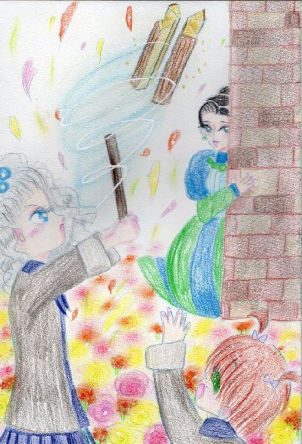
アンドゥーシャ10歳、この忘れた世界では花の季節で数え年で歳を数える。そして花の季節といえばアンドゥーシャにとっては優しい唄を聞ける楽しい季節だった。
彼女はいつも通り寺院の裏で棒きれをふるう。
烈風が吹き狙った獲物を切り裂いた。
「フルーニャ！もう一個投げて！！」
「はい！」
フルーニャはまきを放り投げる。アンドゥーシャはそれを細かく家事に使えるように切り刻む。
銀髪を揺らしてアンドゥーシャは切れ味を自分の目で確かめる。
「・・・・・」
アンドゥーシャは修行の結果見る見るうちにラインハルトの技を身につけていた。彼女の監視役アントーネもそれを嬉しく感じていた。アントーネは今自分が歴史に残すような奇跡を目のあたりにしているのだと、自分の役割と責任に充足感を得ていた。
しかし、肝心のアンドゥーシャはそうは思ってはいなかった。自分の力を試したい。自分の持てる力すべてでどんな事が出来るのかを知りたかった。
アンドゥーシャは寺院の目に届くように育てられていた。決してその力を村人たちに見せつけるような事はさせてもらえなかった。居心地は悪くなかった。アンドゥーシャは一つの目標を持っていたので力を得られるなら今の環境でも何の不足もなかった。
ただ見ているだけのアントーネ、何もできないフルーニャ。大概のわがままは許されるようになっていった。技を磨いていれば寺院の人間は特に問題もないようだったのでアンドゥーシャはただひたすら修行を自ら率先して行っていた。
「・・・・ねえ、あれが食べたいわ」
アントーネは頷き小瓶を持ってくる。木イチゴのジャム。
それを村で育てた牛の乳に混ぜて飲むのがアンドゥーシャのお気に入りだった。
「アンドゥーシャ様・・・私も飲みたいです・・・」
「だ―め！！」
「あーん、けちーーー！！」
フルーニャは泣く。アンドゥーシャはなんでフルーニャに分けてあげるのか全然わからなかった。アントーネも慰めるがフルーニャには与えなかった。アンドゥーシャはべーと舌を出して一気に飲んでしまう。フルーニャはいつものようにぐずっていたが十分ほどで又ニコニコ笑顔に戻っていく。どうやらフルーニャは少し頭が弱いようだった。それでもアンドゥーシャについての事になるときちんと教えられた事をやるので誰も問題はなかった。
アンドゥーシャは口を舐めまわしてアントーネに言う。
「ねえ、木イチゴはいつ取れるの？こんなにおいしいものどこにあるの？」
アントーネは頷く。
「教えません。」
「どうして？もっとたくさん食べたい！」
「あなた絶対取りに行くでしょう？危険な場所なのです。我々もそうは取れませんから。あなたが食べてるジャムも高価な代物なのですよ？」
アンドゥーシャは納得せずにアントーネを探ったが途方もない場所から運ばれてきたものだと知って落胆する。アントーネは嘆息する。
「なぜ・・・・風の騎士ラインハルトといい・・・・貴女といい・・・食べ物の事にしか執着が・・・・」
そして頭を抱えている。ラインハルトの日記には常に何を食べたのか記載されていた。アンドゥーシャはそのたびその食べ物を食べたがり、人目を盗みワインをあおって泥酔状態になって発見されたこともあった。それで懲りたのか食べ物をたべたがる事はなくなったのだが例外があった。果物である。特にイチゴ関係。
その執着は凄まじく作った事もないイチゴのフロマージュを作ろうと村人に接触しクリームチーズを貰いに行ったこともあり大変あわてた事もあった。アントーネにとって最近の悩みはいかにイチゴの保存食を集めるかだった。イチゴジャム各種、庭園で育てるための木イチゴの種、ラム酒漬のチェリー、果物の砂糖漬け、干しブドウ、変わったところではスモモのサイダー。
ふとアントーネは自分の子供時代の事を思い出した。よく森の裾で木イチゴ取りをした事があった。それはちょうど今頃の時期、花の季節が過ぎたころだった。アンドゥーシャは過敏にそれに反応したが悟らせるそぶりは一切見せなかった。
夜アンドゥーシャはベッドから跳ね起きる。アンドゥーシャの遊び相手とみなされたフルーニャはアンドゥーシャと同じ部屋で寝かされていた。
アンドゥーシャはフルーニャの茶髪を引っ張る。
「おきて！！」
「もう・・・朝ですか・・・？」
フルーニャは寝ぼけて窓を見る。月光が明るい深夜だった。
「？？？」
フルーニャは首をかしげる。
「おもらしですか？それともトイレ？」
「ば、ばか！ちがう！！」
アンドゥーシャは顔を真っ赤にしてぺチンと叩く。
「木イチゴを取りに行くのよ！！」
「ジャムですか？盗みに行くのですね・・・・怒られますよ？」
「なんでそんなことしなきゃいけないの！！」
アンドゥーシャはくるりととんぼ返りをする。
「森に取りに行くの！！」
「森・・・ですか？？」
フルーニャは起き上がって着替え始めた。
「・・・・・」
アンドゥーシャはしばらく色の白い頬を真っ赤にしていたがある事に気づく。
「あんた！なに、平気そうな顔してんの？」
「へ？森に行くのですから着替えてるんですよ？」
「いやそうじゃなくてさ・・・・森に行くのよ！森に！！」
アンドゥーシャは声を殺し耳元に囁く。
「怖くないの！？」
「怖いんですか？」
「す、少しは・・・だって、行った事ないし・・・・」
アンドゥーシャはぶつぶつ呟くがはっと自分の今の状況を気付き顔をあげて怒り出す。
「なんで私が動揺しないといけないの！！」
「私は～アンドゥーシャ様がいれば大丈夫です。だってアンドゥーシャ様はお強いのでしょう？なら安心です～」
「・・・・大物ね、あんた」
アンドゥーシャはあんぐりと口を開けて放心している。
忘れた世界の住人にとって森は異質で恐怖の対象であった。忘れた世界は中心部に大変大きな湖ワッシャ湖を中心に乾いた大地が広がる世界である。その忘れた世界の端にあるのが森である。森は植物の支配する場所であり、森を超えて行けるのは空を飛べる鳥と月流鯨だけである。人間が恐れているのは月流鯨だった。その巨体は獲物を森の大樹ごと飲み込んで維持しているといわれ、森に捕まった者は月流鯨に喰われると信じられていた。
フルーニャはそれを知らないはずはない。何度も聞かされて泣きわめいていたのはフルーニャ自身なのだから。
アンドゥーシャもいつも着ている寺院の子供たちが来ているごわごわとした厚手のシャツを着る。この服が何度も着古されて洗濯されてなめらかになるころには子供は村から旅立っていく。彼らは一人前の水使いになって世界中を歩くのだ。
アンドゥーシャはバスケットを持ちこっそり寺院を出る。方角は知っている。問題ないといえよう。アントーネによれば子供の足でもすぐ行けるらしい。
月夜の薄暗い中ずんずん歩いていく。アンドゥーシャは嬉しそうに小走りしたりフルーニャに飛びかかったりした。フルーニャはニコニコ笑いアンドゥーシャの後を必死に歩いていく。月光の夜は思ったより明るく薄く二人の影を伸ばしていく。考えてみれば村を出るのはアンドゥーシャにとって久しぶりだ。
アンドゥーシャは意気揚々と歩いていくがふと考えて立ち止まる。フルーニャはそれにあたり目を回した。
木イチゴの木ってどんなものだろう？アンドゥーシャは必死に思い出そうとするが無駄だった。アンドゥーシャは木イチゴの木を知らなかった。種類によっては小さな木であったり草みたいに地面に生えていてとげとげして人を寄せ付けないものだなんて知らなかった。いつも人にもらってばかりだった。
アンドゥーシャはちょっと考えてフルーニャに命令する。
「水視しなさい」
水使いの技の一つ、水視。それは水場などに残された記憶を探る術である。簡単にアンドゥーシャは言ったが才能があるものしか得る事が出来ない高等技術である。
「はいぃ？」
フルーニャは首をかしげる。
「私～まだ習ってません～」
「使えないわね！今やってみなさいよ！できるやつはすぐにできるんでしょ！！」
フルーニャはさらに首をかしげる。
「でもやり方わかりません～」
アンドゥーシャはフルーニャの首を元に戻して後ろを振り返る。まだ村のポツリポツリとした明りが見える。忘れた世界は荒廃とした大地で占められる。北の方角にある村の周囲には草と忘れたように木がまばらに生えているだけだ。旅人ならだれでも知っている「川に沿って歩け」はアンドゥーシャ達は知らない。とりあえずまた歩いていく。
「・・・・・」
「・・・・・」
二人は無言で歩く。アンドゥーシャは先頭でとりあえず生き物の気配を読んだ。普段知っている人間の事ばかり読んでいたので面食らったが自分が歩いていく方角は間違ってないようだ。この辺りはキツネや馬がいるらしい。鳥は寝ているのか読めなかった。
歩いて気がついたが平面を歩いているようで随分な斜面を歩いているようだ。月明かりで森がぼんやりと照らされていく。
「わぁーきれいですね～」
フルーニャは喜んでその風景を見ている。アンドゥーシャは普段見慣れていない木々が群れて生えている森に迷い込んだらと想像するだけで身震いした。ある真っ暗な森に放り出されたらもう戻れないだろうか・・・・
それでもアンドゥーシャの心の中に出来たての木イチゴが大きく私を食べてと叫んでいてその欲求に逆らえずにふらふらと森に近づいていく。そしてアンドゥーシャは求めていたもののにおいを探り当てた。手探りで草むらを探った。チクチクとした枝の先に確かにそれはあった。
「わぁ！」
アンドゥーシャは迷いなく口に放り込んではまた探り出す。出来たては至高の味だった。みずみずしくて傷んでもなく熟れて甘みが強く力強い野生の香りが鼻孔を満たしていく。手探りなので熟してないものもあったがアンドゥーシャは構わず飲み込んでいく。両手をべたべたにして夢中で食べる。
「アンドゥーシャ様～？」
「あによ！」
「べたべた・・・・」
フルーニャは丁寧にアンドゥーシャの顔を拭いていく。私って今フルーニャにお世話されてるの？ちょっと恥ずかしくなったアンドゥーシャだった。
ばつが悪いのでフルーニャの口に木イチゴを放り込む。フルーニャは黙ってもごもごしていたがこう切り出した。
「モミジイチゴですね」
「ええ！？」
アンドゥーシャは石と化した。
フルーニャは指で枝を触っていく。
「この～枝の棘。間違いないです～」
フルーニャは適当に辺りを見て何かをとる。
「こっちはカイジイチゴです～」
「ええ？」
先ほどアンドゥーシャが夢中で口に放り込んでいた黄色い木イチゴより小粒の赤いイチゴ。フルーニャはなんでもなさそうな顔でこちらを見ている。
アンドゥーシャは咀嚼する。酸っぱい。さっきより酸味が強い。香りが先ほどよりさわやかでこれはこれでありだ。
アンドゥーシャは頷くともっと取ろうとがっつくがフルーニャに制される。
「このカイジイチゴの棘、モミジより痛いです～」
「ぬ、ぬぬぬ・・・・」
どうやらフルーニャは経験者だったらしい。そういえば全然落ち着いていたしヤケに歩き慣れていた。学ばなければ・・・・この子よりもっとイチゴ食べるんだから！！
ふと月がさえぎられる。上を見ると大きな影だった。しまった！木イチゴに夢中で！！二人は空を見上げる。
大きなひれをゆっくりと動かしそれは回転してゆく。そしてちっぽけな人間二人を見ていたがやがてその巨体は群れに声をあげて帰っていく。アンドゥーシャにとって人生初の生きた月流鯨だった。アンドゥーシャにとっては腕試しがしたかったので少し残念だった。しかし何より戦って木イチゴを踏み荒らすのは興ざめだった。
「・・・・帰ろうっか・・・・フルーニャ」
そう言って私は声を上げたが一向に返事はない。そうこうしていくうちに月流鯨は森の奥の上空へと去っていく。それを目で追いながら銀の巨体に乗って旅をしたらどんなに気持ちいいだろうなと思った。
とうとう見えなくなってフルーニャの方を見ると気絶していた。とりあえず付近の木イチゴは全部食べた。
浅ましいこの姿、見てよラインハルト。まるで獣よ、獣。私は誰にも理解されないけだもの。貴方はしらない、私がいるという事を。認められないなら死んでるのも同然。誰か私を肯定してよ。
第一章 戻れる場所があるのならば 了
第二章 発掘王
紅くもゆる空、乾く大地、あなたはどこ？たった一輪の花はどこに咲くの？雨のように穿つ人々の意思、そんなものに意味なんてない。ほしいのはあなただけ。あなたがいる場所が絶望ならきっとそこまで救いに行く。あなたが幸せならそれを守ろう。
風が吹く。月流鯨が目覚める時間、夕日が眩しい。私は木の上でそれを見つめる。森は豊かで沢山の木の実があっておいしくて生きてるって感じがする。私はフルーニャが摘んでくれた木イチゴや桑の実、すぐりなどを慣れた手つきでつぶさずに口に放り込めるだけ放り込む。この甘酸っぱさのカクテル！！こんなお菓子、どこかに作ってくれる人はいないかしら？そんな人いたら追いかけちゃうから！
私は全部胃に収めると伸びをする。
「やほ！ねえ、ここはあきちゃったからもう行こっか？」
さて！私とフルーニャの女旅は再開したのでした。私アンドゥーシャ17歳！花の季節は過ぎて風の吹くままと申しましてもこれはこれで苦労がありますわ、よほほほ・・・・知りたいことはたくさん。とりあえず・・・・世界地図を持ち出して私は大きく東の土地に流れる大河プラウ川にばってんを付けたのでした。
「行こう！」
アンドゥーシャは銀髪を揺らして日傘を差す。その姿はもはやごわごわした制服ではなくフリルであしられた真っ青な貫頭衣をなびかせる。貫頭衣と呼べる長さではないかもしれない。それはマントにも近いだろう。アンドゥーシャのスタイルの良さを隠すような長さだった。
その後をちょこちょことフルーニャがついていく。彼女は小さなリュックとバスケット一つ抱えている。それだけが彼女たちの荷物だった。二人だけで歩いていく。
「とばすよ、あはははは！」
一陣の風が吹き彼女二人はプラウ川から姿を消した。
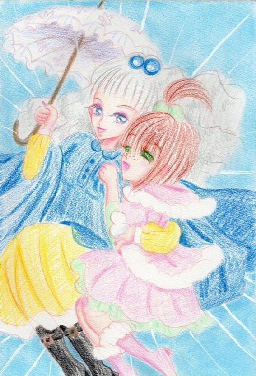
数時間後、アンドゥーシャの姿は忘れた世界の中心部メリクロンのギルドにあった。ギルドはいくばくかの前報酬で案件を片付けるなんでも屋の本拠地であった。荒い雰囲気の男たちが集まるこの店でアンドゥーシャは浮いていた。
「またあんたか・・・・なんですぐに帰ってこれるんだ？」
バーのマスターを兼任しているおじさんが唸る。
「足が速いのよ」
アンドゥーシャは指をチッチと振りジンジャーエールを呑む。
「それにしちゃあ・・・・無茶な仕事ばっか受けて・・・一つもポカらねえ！おかげでこっちの賭けは大負けばっかだ！アンドゥーシャ、あんたなにもんだい？」
「風の騎士、ラインハルトの・・・」
「アーアー聞き飽きた。ラインハルトなんて数百年前の大昔だろうが！お前にゃカードマスターのほうがよっぽどあってるぜ！自分が得する方に賭けて洗いざらい取っていきやがって！！」
アンドゥーシャは何か気付いたようで座ってた椅子からひょいと腰を浮かす。
「あっちくしょう！！」
アンドゥーシャの尻を触ろうとした男は悪態を付く。さらにいちゃもんをつけようとしたが男は体が勝手に回転運動した錯覚をした。アンドゥーシャは男が飲んでいたビアを頭にかけた。皆そのさまに大笑いする。
マスターも苦笑いする。
「やめとけ、やめとけ。このお嬢ちゃんは・・・・つええぞ」
アンドゥーシャは男をブーツで蹴り昏倒させ商談に戻る。
「いい仕事、ない？」
「そりゃああんたならどんな仕事でもこなすだろうが・・・・今は作物を育てるのに水使いたちの案件ならあるが・・・・他は用心棒しかねえよ？いいのか？」
マスターは走り書きのメモをばらりと見せる。
「・・・・おっさん、どうせこの用心棒の仕事も水は個人で確保って言うんでしょ？」
「ご察しの通りで」
「私、水使いの仲間がいるの。わけないわ」
グイっとジンジャーエールを飲み干すと彼女はカウンターから立ち去っていく。
「セッティングよろしく～」
「待った？フルーニャ・・・」
私はフルーニャの茶髪に口づける。私はホテルの安ベッドにフルーニャを押し倒して耳元に囁く。
「アンドゥーシャ様・・・・まだ探すんですか？」
フルーニャがかすれた声で呟く。
「ずっと探す。貴女も逃げたら世界の果てまで追いかけていくから」
私の秘密、私の目的を知ってる可愛いフルーニャ・・・逃がすわけないでしょ？私たち死ぬまで・・・・一緒よ？
アンドゥーシャは言葉にする代わりにフルーニャの耳たぶを甘噛みする。彼女の体はびくりと震えるが抵抗はしなかった。
細くしなやかに育ったフルーニャの肢体、私は指でなぞっていく。・・・私を見なさい・・・私だけを・・・見て・・・・貴女だけは・・・私を裏切らないで・・・・
朝、アンドゥーシャは伸びをして隣で寝ているフルーニャを置いて顔を洗い髪をとかす。鏡の中の自分を覗き込む。面白くないほど男受けする顔ね・・・いらないって思ってるのに何で育つのかしら？
そう思い困った顔をして腕組みすると鏡の自分はとても愛らしく誘ってるかのようでうざい。私は自分が大っきらいだ。私はあっかんベーをしてフルーニャを起こす。
「さっフルーニャ、おきて」
フルーニャは猫のように丸まって寝ている。ふふふ・・・人間こうも無防備なら誰でも愛せるのにね。
私たち二人は依頼人と対面する。茶髪のうだつの上がらない男。嫁に尻に敷かれてるのが見えるかのようだ。腹が出て恥ずかしくないのかしら？
笑顔でそれを隠し私は早速仕事に入ろうとしたが依頼人は地図でどのルートを通るか確認するといってカフェに入る。しかし私はすぐにロビンといったか彼の考えを読んだ。どうやら二束三文のポルノを描いているようだったから、私はフルーニャの手をとってわざと彼女の頬にキスをする。
「私たち、姉妹みたいでしょ？ずっと一緒なんです」
笑顔で言ってやった。彼は顔を赤面して頭は仕事の事でいっぱいにして余計な考えを追っ払ったようだった。単純～
気を取り直して私はホットフルーツティーを頼む。フルーニャはサンドウィッチとホットミルク。席に備え付きの蜂蜜を入れて無心で飲んでいる。あらいやだ、昔の誰かを思い出しちゃう。
アンドゥーシャは事務的な事を聞きながらロビンを見てため息をつく。平凡な男。平凡、それが妬ましくて仕方がない。この男を見て彼の富をラインハルトが持っていたものと比べてしまう。なぜ私たちはこうも孤独でなければいけないのか？彼は知らない、知らないからこうも平和でいるのだ。
彼がこう言う。「僕たちのキャラバンは珍しいものを積んでいるので護衛が必要なんですよ」
その言葉で強盗を働きたいと考えた人間はアンドゥーシャがわかる範囲で三人はいた。大概は考えるだけですむ。彼らはすぐに目の前の喫茶に入りその考えは霧散する。アンドゥーシャはそれを慣れたように流して、フルーツティーに入っていた熱が通った状態のリンゴをフォークでさして塩を振って食べた。
「変わった食べ方するんですね。」ロビンはふふふと笑う。
「そうですね。おいしいものはどんなふうにしてもおいしいですから」
そういってまたフルーツティーに入っている果物に塩を振りかけて食べていく。そう悲しいかな、どんな時もおいしいものはおいしいのだ。
旅が始まる。私はキャラバンの先頭に立ち敵がいない事をチェックする。陽が高い。まるで敵に見つけてくれと言ってるみたいだ。忘れた世界は平坦な地が多く、野生の動物も少なく食料を失えば干上がるのも時間の問題だ。噂では牛や羊、山羊、狐、馬などが自生しているような事を聞いたがやはり生息地は水場に集中している。
私がすぐに雇われた理由の一つはフルーニャだろう。彼女は水使いとしては未熟だが扱える水の量が多く空気中や地中から水を生成して、五人のキャラバンなら彼女でまかなえるだろう。
護衛対象は馬車三台。チーズなどの乳製品を布や種イモ、保存食に変えて町から旅立つ。今度は乳製品を集めた村に物資を配るのだ。そして又乳製品を集め町に戻る。キャラバンの五人はいつか自分たちの会社を作りたいと言っていた。
敵は人だ。売ればもうかるといったものを運んでいる動きの遅いキャラバンは狙われやすい。彼らは独自のアジトを持っていたり尾けていたりする。今回は盗賊たちに後を取られていないようだ。
ふうと私はため息をつく。
「サアっと移動できればこんなリスク減るのに・・・・」
ロビンさんが額に汗をかきながら馬車の指揮をとりつつ笑う。
「そりゃあ言わない約束ですよ！そんなものがあったら私たちキャラバンは商売あがったりですわ！！」
フルーニャは・・・・寝てる。あいつはあてにしたらあかんですわ。
アンドゥーシャは日傘をくるくるさせる。
ロビンさんはほおとその日傘に興味を持つ。
「ちょっと見せてもらってもいいですかな？」
「壊さないでね」
ロビンさんは自分の鑑定眼でその日傘を査定した。
「いいものですが・・・・ただの日傘ですな」
「そうですけど？」
彼は困ったように頭をかく。
「用心棒・・・なんですよね？」
「ええ、女じゃ不足？な～んてね、のほっほっほっ！」
アンドゥーシャは笑いながらくるくる回る。暑いのに元気だなとロビンは呆れかえった。
アンドゥーシャはピタリと回転を止めてウィンクする。
「私の事ならド～ンと大船に乗った気分でよ・ろ・し・く」
二、三日過ぎて二つの村を訪ねた。キャラバンは無事に品物を渡し食料を得て旅は良好だった。それは旅路の途中だった。アンドゥーシャは機敏にそれを感じ取った。寝転がっていたのがひょいと跳ね起き畳んでいた日傘を西の空に向かい開く。
その瞬間烈風が吹きさび流れ矢をあらぬ方向へと流していく。
「な、なんだあ？」
馬はいななきキャラバンは総崩れする。アンドゥーシャは馬車から飛び出し宙を蹴る。すると彼女の体は空へ討ち出される。猛スピードでアンドゥーシャは空の階段を渡り、矢を放った賊のアジトを突き止める。
ヒールで円を切ると真空が成み出され風景と同化するように作られた木造物は瓦解した。アンドゥーシャは何事もなかったようにふわりと着地する。貫頭衣が翻りその下はワンピースを着ている事がわかる。そして畳んだ日傘を一閃させると真空でズタボロだったアジトごと敵は吹き飛ばされた。
アンドゥーシャはそれだけでは満足せず吹き飛んだアジトの破片や人間に日傘の骨を回転させ生み出した竜巻をぶつけようやく満足した。探ってみると息をしている人間は一人ぐらいいるがやがて死ぬだろう。
アンドゥーシャは壊滅させた賊に興味をなくし悠々と銀髪を撫ぜつける。
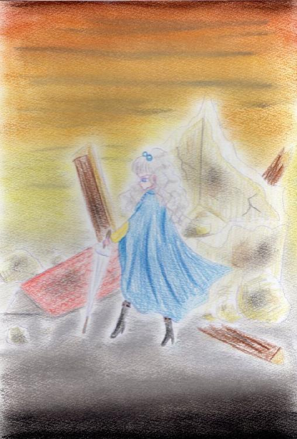
約一分の出来事であった。
「あ、あんた・・・いったい？」
それを薄く笑いこう答える。
「私は風の騎士ラインハルト、唯一の後継者、アンドゥーシャよ。」
貴方はどこへ行くのかと問われれば答えられるのか、大概に人はどこにも行けずに這いまわる。誰も未来の自分を保証できずただ空虚な未来を見つめそれが道へと続くと信じている。きっと誰もそこへは辿り着けない。そこには誰もが欲しかったものがあるのだろう。
「そういえば、今までどこで何をしていたんですか？」
そう用心棒をしていたアンドゥーシャに話しかけるロビンさん。アンドゥーシャは答えず胸の奥に秘めるものを思い出す。
一陣の風が舞う。
風使い、風を操る能力者。出生率が低くどんな能力者なのか誰も知らない。ただ伝承にラインハルトという風の騎士と呼ばれる人物の功績が忘れた世界各地に残っているだけだ。
ラインハルトが隠していたものを彼自身はこう呼んでいた。風読みと。
風読みは伝承にはない。水使いの能力の一つ、過去を読む水視に相当する風使いの能力。彼はそれをひた隠しにしていた。ラインハルトは死ぬまで隠し通した。風に残っている残留思念というやつだろうか？それを読み取るのだ。風に乗って人の思念が視える。ラインハルトが心を閉ざすのもわかる。あなたは自分の価値をつねに測られたことはあるだろうか？先入観、期待、失望、無視、怒り、性欲、ありとあらゆる感情が見えてしまう。
アンドゥーシャも例外ではなかった。心を閉ざし師となるラインハルトの言葉に従った。そして悲劇なのは今までそれが一度も間違っていたということがなかったことである。信じられる人間がいない。アンドゥーシャの深層心理の中にはもう父親もいなかった。父親は逢いに来ないと悟ってしまった。ラインハルトの言葉を読んだあの日以来。アントーネは味方ではなく自分はモルモット。アントーネを信頼する前に告げられた真実。幼いアンドゥーシャはただ耐えることしかできなかった。だが私の心にはマグマのように怒りが煮えたぎっていた。爆発するのは何かの拍子で十分だった。
きっと私たちは誰も理解されない化け物・・・・
アンドゥーシャは旅をするには目的があった。ラインハルトには17歳の彼女はもう決別しており只一人を探していた。忘れた世界をもう彷徨って二年になる。アンドゥーシャは決してあきらめないと誓っていた。
唄が聞こえる。泣きだしそうにつらかった時、父親と決別したとき、誰も信頼できないと理解したとき、彼女はすぐそばにいた。優しい唄、味方が傍に居てくれる、それだけで力が湧いてくる。震えても一人ではないとこの忘れた世界のどこかで私を見てくれるとただ風に乗って貴女が祈る。この世界で私が強く生きる事を願って。
「私はあなたを見つけ出して今度は私があなたの力になる・・・」
そうアンドゥーシャはいいまた一歩踏みしめるのだった。
この忘れた世界はいろいろ行ってみてわかったがどうやら北と南では随分趣が違うようだった。北は貧しく南は二毛作ができ食料には不自由していなかった。アンドゥーシャが育った村は北の端にありやはりこうして知ってみると貧しかった。南は井戸を掘り川がない土地でも人が住む。南の土地には昔、水使いの女傑スノールの館月光の館などに見る歴史的建造物もあり人がにぎわう。
アンドゥーシャはフルーニャの腕をとりながら南をふらふらしていた。目的が漠然として居てどこを探ればいいのか分からない。
宿で蝋の光の中世界地図を眺め見る。彼女が探している女性は花の季節どこからか風に乗ってアンドゥーシャの為、祈りながら唄う。
だから風に乗ってくるというからには絶対この忘れた世界に居るはずだ！風視は水使いの水視と比べると幾分単純な能力だとアンドゥーシャは考えていた。風に乗ってきた残留思念、消えては現れるその考えが伝わるだけだ。生きてるものしか近いものしかその意思を読む事は出来ない。それも表面上だけ。だからあの人は今生きてどこかに居るはずだ！
アンドゥーシャは村から吹いてくる風がどこからか流れてくるのか調べていた。だが季節風はちょいちょい変わる。村に居た時は村人の残留思念は運ばれる事はあったが外の世界では何も伝わってこなかった。最初彼女は寺院の人間ではないかと疑っていたがすぐに違うとわかってしまった。あの人が唄っている唄は誰も知らなかった。あの人は特別な人なのか・・・・？
アンドゥーシャは長い銀髪をくしゃくしゃにして考えをまとめようとする。まだ決まったわけではないが思念が大きい人間は居る。今日は月明かりが強くアンドゥーシャが一人部屋の備え付けのベッドで考え事をするにはぴったりであった。隣でフルーニャはクッキーを焼いている夢を見ている。フルーニャの夢は優しく私を慰める。
夜風が流れてくるが昼間に比べて静かだ。夜中皆寝静まっているに違いない。それでも伝わるものはある。だからこんなふうに花の季節に強い思いを持つ人がどこかに居るに違いない。花の季節は一週間あり、強い季節風が吹き皆ささやかな宴をして楽しむ。
「花の季節に・・・・特別な思いを持つ人・・・・」
きっと優しい女性だろう。私にはわかる。あんなに絶え間なく私を愛してると囁き続けてくれる。ひと時も裏切らないラインハルトが求めた聖母の様な人。
でも最近変だ・・・あんなに身近に感じられたあの人のイメージが弱ってきたような・・・・イメージと実際の人は違うのだろうか？今までの出会った人は皆少なからず表面上の感情とぶれることは少ない。では・・・彼女が弱っているのか？それとも私の風視の力が鈍くなっているのか？
「いや・・・・違う、そんな筈は・・・っ」
私は爪を噛む。風使いの体験者が二人しかいないのも痛い。これから私がどうなっていくのかさえ保証されていない。水使いは学問のように調べつくされ学校のようなものも作られている。私がいた寺院もそんな体裁をとっていた。
それでも・・・水使いと風使いが似ているならば・・・年と共に能力の衰えはないはずだ。なんにしろ知識が必要だ。そのためには金が必要だ。何バンツ貯まったか考えては落ち込む。
普段の性格は周りの人間をだます必要でできた偽物だ。
・・・・この忘れた世界においてだます、嘘をつくという事においては厳しく戒律をもたらされている。私は・・・罪人なのだろうか？
なんでも屋をやっているとたまに探偵業の様な事をするときもある。依頼主のオーダーは奥さんの浮気を探ってくれというもの。
「な～んだ。結局みんな嘘ついてんじゃん」
私は建物の屋根の上で呟く。結局自分しか信じられないというやつか。私はやれやれとため息をつく。安堵のため息なのか、落胆なのか自分でもわからない。依頼主の奥さんはお買いもの中でたくさん買い物を持って今日の晩御飯は何をしようか考え中だ。依頼主は宿を複数経営しているおっさんだ。人間地位が高くなると相手もランクが高くなり疑心暗鬼に陥るって寸法？毎度ながら不安になるなら自分の身丈に合うパートナーを選べよ・・・
こういう仕事は嫌だが風使いにはぴったりだ。ラインハルトには無理だろうけど。
奥さんは～店の角にあるパン屋の兄ちゃんがお気に入りで・・・あ～やだやだ、旦那のこと好きじゃないみたい。金目的か・・・・昔いたあの村は牧歌的だったのね。
私はふらりと日傘を広げ風に乗って屋根から屋根へと音もなく移動していく。この町はレンガ造りでぴょいぴょいはねると自分の影が楽しそうについてくる。風が気持ちいい。マントが翼みたいに翻ってどこまでもいける。
そう、私は自由、もう一人で泣いてたあのころと違う。その気になれば忘れた世界から独り脱出できる。それをしないのはあの人を探すため。いつかフルーニャと私とあの人三人で森で沢山のイチゴをとってそのままこの世界とおさらばしよう。
「だから待ってて・・・・あなたを探すわ！」
私は綿毛のようにくるくると回り屋根へと降り立つ。誰も私を気にしている人たちは居ない。空なんて誰も見上げない。大人は特にそう。
そうラインハルト、誰も私たちを気にしては居ないの。あなたはもっと自由にしてよかったのよ？可愛そうなラインハルト。私があなたを抱きしめてあげればよかったのに！！きっと私はあなたの理解者になれた。
「・・・っと！」
仕事を忘れたらいけませんわ。私は風を読む。ご婦人は男漁りをしているご様子はない。普通に買い物のリストをこなしている。そうこれが普通の暮らしだ。
「・・・・普通の暮らしか」
誰かと人生を分かち合う、結婚か・・・・そんなにいいものだろうか？私には無理だろう。こんな心を覗ける私はあの遠い普通の人よりよっぽど疑心暗鬼だ。守り戦う事はできる。でも理解されない。私もこの能力がなければあんな風になれたのだろうか？
私は日傘をくるくる回し足を屋根から放り出して貴婦人を覗く。彼女は明日の献立を考えながら男に楽しそうに抱きついていた。やれやれ・・・・これだから人間ってやつは・・・・
きっとラインハルトはこんなふうに傷ついたのだろう。信じようとしては突き放されて、嘘で賛辞を受ける。私たちのような風使いはどこで生きていればいいのか誰も答えやしない。私にはフルーニャがいる。彼女は私を信じどこまでも息を切らせながらついてくる。私にはあの人がいる。彼女の願いはどこまでも純粋でずっと耳を傾けたくなる。そんな存在をラインハルトは持てなかった。
仮面の風の騎士、ラインハルト。彼は槍使いでずっと一人で戦い続けている。私の中で彼は叫ぶ。彼を鎮める言葉も見つからずに私は彼と対面する。彼は忘れた世界に拒絶された孤独な人。
私は・・・彼の遺恨を断ったはず。そうあれでよかったのだ。でも彼が望んだのは私がした事ではなかった。
ラインハルトはやはり風の騎士にふさわしい人物だった。彼がした事は無駄じゃない。その証拠にこの忘れた世界を歩いてみればすぐにわかる。彼は皆に愛されていた。孤独だったのは彼の心でその人柄で沢山の人が救われたのだ。
私は貴方の後継者として恥ずかしくないように生きていく。
あなたは自分の能力を生かせる場所を見つけたらその場所で生きますか？それとも立ち去りますか？それには夢が必要だろう。私に夢なんて覚悟も資格もなかった。ただだらだらと訪ね人を探して野垂れ死にでもすれば満足だった。けれど歴史は、人々は力を欲する。私はただ変えたかった。力持つ人間を排斥してほしくなかっただけ・・・それだけだったのに・・・・
アンドゥーシャ数え年でちょうど18歳。この忘れた世界では花の季節で年を数える。花の季節とあの人の邂逅は比例する。アンドゥーシャは花の季節フルーニャと人々の輪に交じり歌い踊る。
「バラは夕暮れ、ユリは朝滴、鳥は風を呼んで君を連れていく。空は廻って星々を食べて太陽にまた食べられる。君の瞳に映る空、僕に求める光と闇、いつか混ざり合ってまた二人に戻ってまたこんにちは、さようなら・・・」
アンドゥーシャは歌う。あの人が唄う歌を一つ一つ。重ねるように、噛みしめるように歌う。フルーニャはアンドゥーシャの歌う歌をワンテンポ遅れて唄う。アンドゥーシャには三重唱で、人々には二重唱で聞こえる。アンドゥーシャにはそれがとてもうれしい事だった。あの人の存在を人々が認めてくれるように錯覚する。
アンドゥーシャは唄い終わりステージで万歳する。フルーニャがワンテンポ遅れて万歳する。アンドゥーシャは笑ってフルーニャの手をとって一礼するとステージから下りていく。次の歌い手がステージに昇り二人は人々の群れに掻き消えていく。
「・・・いいね」
誰かが二人の後姿を見て呟く。
私はくるりと後ろを見ると人でにぎわって居て誰が誰なのか分からない。賑わっていく中、誰かの意識を追跡するのは無理に近い。
「でも・・・確かに・・・？」
「きゃ～～アンドゥーシャ様！ギボ―ヴが売ってます～」
「ええ！？ようし買い占めるわよ、フルーニャ！」
二人は暖かい紅茶を飲みながら町から見える一面の花畑をつまみにギボ―ヴを食べる。甘酸っぱくて最高！これだからあちこちで買い食いするのたまらない！
「くぅ～このお花のいい香りと果物の味が混ざってどうにかなりそう！」
アンドゥーシャはリンゴのアイスクリームも買ってキャイキャイ行って屋台を廻ってるうちに先ほどの視線などどうでもいいような気がしてきた。いちいち人の視線を気にしていたらラインハルトの後継者なんて名乗れない！！むしろ、視線がきもちいい！
「ふう・・・食べたわね・・・」
「食べましたね。アンドゥーシャ様」
「どれぐらい食べた？」
「う～ん財布見るの怖いです～」
「怖いよね～」
和気あいあいと日が暮れて路地裏を通って宿屋へ直行しているとフードの男が現れる。
「・・・さっきの人？」
「へ？なんですか？次の依頼人ですか？」
フルーニャがどんぐり眼で私とフード男を交互に見まわす。
「・・・失敬、このままは失礼でしたね。」
そういって男はフードをとるとフルーニャからひっと声を上げた。男は左の顔にひどい傷があり左目は見えていないだろう。アンドゥーシャはその男を探る。彼は力を求めていた。そのために私を使おうとしている。つまりお仕事っていうことかしら・・・
「私こう見えても忙しいのよ？貴方誰？」
私は仕方がないと腰に手を当て彼の出方を見る。彼は心の中で呟く。聞こえないほど小さな声で私にはわからなかった。
「私は組織の狗のルカです。」
「ルカさん・・・ね。随分ひどい傷ね？」
ルカはああと見えない目を探る。
「見苦しく思いますがこれが私。そう、今や組織は私のようでもあるのですよ。醜い傷ですが・・・・顔を見せなければ始まりませんからね」
アンドゥーシャは首を横に振る。
「もっと酷い顔を年がら年中見てたのよ？大した顔じゃないじゃない。ラインハルトなんてもっといい男だったわ」
そう言ってアンドゥーシャはフルーニャを守るかのように前へ出る。傘をビッと彼に向ける。
「何の傷？」
「遺跡の防御兵器にやられました。生き残ったのは私を含め数名。私たちはかつての隆盛を得ようと焦ってあの事故です。いい教訓ですよ」
ルカはフードをかぶり顔を隠す。
「遺跡・・・・」
アンドゥーシャは繰り返す。遺跡、この忘れた世界に残された人間には理解もできないほどの科学力で造られた遺跡。遺跡は辺境の森のそばに点在し死んでいる遺跡もあればまだ稼働している遺跡もある。人々は森に対するおそれや遺跡の不気味さにおののき誰も近寄りはしなかった。そしてその正体を探ろうとして旅立ち帰ってくる者は少なかった。又遺跡が暴走したことも逸話で残っておりまだまだ遺跡は誰も手つかずで残っているのが現実だ。
そもそもこの忘れた世界は数百年か、数千年前に生まれたのかさえもわかっていない。何も流れた時間を計るすべは人の手にしか残らず歴史さえも昔話のようにぼんやりとしか伝わっていない。この世界には未開の情報が多く生まれた人々は世界がどうなっているのか知らない。誰もが生きる事で必死で過去の事などわかりもしないのだった。
でもアンドゥーシャにとってはどうでもいいことだった。彼女にとってはまた仕事が入った、それだけだ。
「こ～んな暗い所で立ち話はいかがなものかと・・・・場所を変えましょ！」
日傘をくるりと翻し日向の方へ歩いていく。
ルカは明るい場所でみると青白く常に日の差さぬ場所で過ごしているのがわかる。場所はカフェ。今は誰もがお花見をしているので逆に町の中心部に属するカフェはガラガラだった。アンドゥーシャはラズベリーのワイン煮をスプーンで食べながら彼が話すのを待つ。こういう場合、相手が何を要求してくるのか待つのがいい。
ルカは重く口を開く。
「見てください・・・・この町を・・・ぐるりと塀で囲まれている」
「知ってる、知ってる。魔王が襲ってきてそれ以来防御の意味でこうなってんでしょ？耳タコよ」
「では・・・魔王とは何でしょう？伝説によると魔王という盗賊が荒らしまわったといいます。けれど私はその原因が遺跡にあると思っているのです」
ふーんとアンドゥーシャはコーヒーをすする。面白い見解だ。
「我々・・・組織の名はありません。それはかつて遺跡をも造り上げた英知を取り戻すまで名はつけないという誓いです。今から150年前に我々の組織は瓦解しました。ほとんどの力は削がれ今はこうして細々と研究を続けてるだけで精いっぱいです。」
「150年前！？」
驚きの声を出すがフルーニャはフルーツサンドを片手にのんきな声で「わあ、大昔ですねえ」と呟いた。
ルカはそれに頷き頭を抱えていた。
「そこで何が起きたか調査に向かった記録によるとわずかに地形が破損しておりすぐにそれも消えてただの森になってしまったという事です。残されたものは何もなかった。森の復元力は驚異的です。我々の手元には予備としての数冊のメモ帳がわずかだけ・・・」
ルカは自分の手を見ながら呟く。
「私たちはただ知りたいのです。この世界がどうなっていくのか・・・依頼をしたいのです。遺跡を探るために御同行してください。」
「・・・・・」
アンドゥーシャはルカを見る。一つだけ残った瞳で彼は見つめてくる。それは強い意志を感じ取った。
「いいわ・・・あなたたち、研究機関なのよね？」
「そうです・・・」
アンドゥーシャの横顔に風が吹きつける。あの人が唄う歌が聞こえる。
「強い思念を持つ人を探してるの」
ルカが怪訝な顔で繰り返す。
「強い思念ですか？」
彼はう～んと唸り声をあげもう一度聞いてくる。
「もっと情報はありませんか？というよりあなたの噂の通りの人ならとっくに自分で見つけ出せるのでは？」
「見つけられないのよ・・・これが」
「水視をすれば、あるいは・・・・」
「ダメ！だめだった！！」
アンドゥーシャはそこまで馬鹿ではなかった。そのぐらい人を頼る知恵はある。でも無理だった。どの水使いも誰も彼女にたどり着けない。しかし花の季節になると彼女は唄い出す。だから存在するはずなのだが過去を探る水視ではそんな人間は居ないといわれる。唄を教えたりもした。けれどもその唄はアンドゥーシャしか知らなかった。
ルカはそれを聞くとフムという。
「水視はあくまでその水場での過去の強い思念の出来事を探る技術。その人とはどうやって出会いました？」
「それは・・・昔馴染みよ！！」
ではおかしいですねとルカは言ってメモ帳に書いていく。
「唄がはっきりとあるのだから情報は確かなのでしょう。問題はその人物がいつ存在したか・・・面白いですね。貴方が仮に嘘吐きとしてもこんなに情報を引き出してくるはずありませんものね。我々にもいますよ、こういう謎の人物」
ホエっっとアンドゥーシャは気を抜けた声を出した。
「いやね、あるんですよ。走り書きでこういう記録が！殺戮の魔女やらなんやら歴史についてなんですがそれも詳しい情報が紛失していてなかなか研究し甲斐があって！」
口下手そうなルカは生き生きと話し出した。
「いやあ、その話。よく聴かせてもらいたいです。信じますよ、貴女の事」
その言葉に偽りはないと風視がささやく。急にアンドゥーシャは赤面してしまった。それを見たフルーニャがすねた猫のようにマントを引っ張る。
「けれど・・・組織に力がないんで今は・・・ちょっと・・・・」
ルカはまたすぐにしょぼんと落ち込んだ。何やら組織は経済的な危機を迎えているようでちゃんとお給金が出るのか不安になる。
ルカは鞄から地図を出す。どうやら場所のようだがアンドゥーシャにとってそれはどうでもよく又不機嫌そうにそっぽを向いて片耳を傾ける。少し期待した自分がバカみたいだ。私はフルーニャを構う。彼女は嬉しそうに体重をかけてくる。
「・・・・風使いってどんな能力ですか？」
ルカがポツリと言う。誰もいない街角のカフェに流れる不穏な空気。
私は景気良く口上を叫ぶ。
「私は風の騎士ラインハルトの唯一にて正式な後継者！アンドゥーシャよ！」
彼は努めて冷静に言う。
「風使いラインハルト・・・今から数百年前に居たこの世界の歴史上で有名な人物ですが・・・その能力はほとんど伝わっていない。彼が何をしたというだけで彼がどれほどの能力者だったのか記載されてませんね。あなたが彼の後を継いだという事実はない・・・といっても差し支えない」
フルーニャがぷくーと頬を膨らませる。私を侮辱されたように感じ取ったのだろう。彼女が水球を作り出しルカにぶつける。ルカは真顔でしぶきを浴びる。
「水使いはこの世界では少ないといっても生活には欠かせない存在で日に日にその数は増えているようです。しかし、風使い、炎使いは、現存する能力者は我々組織の活動内ではあなたしかいない。」
「観たいの？」
「はい」
ルカはただこちらを見てくる。私の中に居るラインハルトは警告する。―知らせるな―と。うるさい、私は今私が望んでルカと話しているんだ。死人は黙ってて！！私はもう言う事を黙って聞いている子供じゃないの！
「風を操るのは知ってるのよね？」
ルカは頷く。
「OKそのぐらいの観念でいいわ。話をしてもあなたは風使いの技を伝えることもできない。なぜなら私しかいないのだから。私はずっと仲間を探してたの。仲間なら、あの人ならずっと繋がっているはずだから。」
誰も誰一人として答えてくれなかった。ラインハルトもこうして日々を過ごしたのだ。涙をこらえ私はコーヒーでのどを湿らせる。
「風使いの基本は吹いている風を利用するの。だからラインハルトは負けてしまった。向かい風だったからね。でも自分でもこうすれば問題ない。」
私は日傘をポンと開く。私はぽいと飾っている花を宙に投げる。花弁が屋根にふわありと飛んでいく。
「なるほど・・・」
ルカはメモ帳に書き込んでいる。
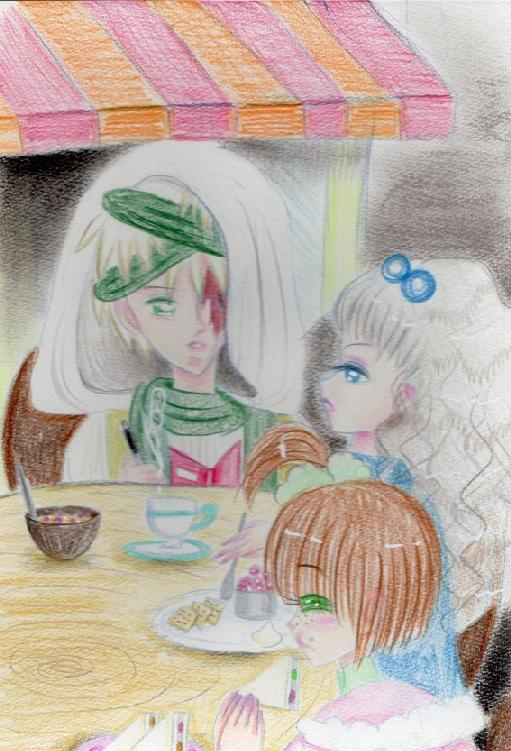
「そんなことしなくても十分知ってるんでしょ？見世物で稼いだものよ。いいものよ。力があるってことは・・・」
「全然そうは見えませんね」
ルカは手帳に向き合いながら呟く。
「まるで・・・自分に言い聞かせているみたいだ」
「いつ出発～？」
私は話題を切り替える。私は彼の本心を読んでしまった。（かわいそうに・・・理解されないで泣き疲れてしまった子供みたいだ・・・）なぜ今になってこんな事を言うの？もう戻れないのに・・・・
ルカの目は鬱々として粘っこい。こいつ、私をあいつみたいにモルモットみたいに思ってる？
「ふふん・・・そんなに見つめてどうやら私の美しさがわかってきたのね！」
私が本心を悟られまいと虚勢を張る。
「アンドゥーシャ様最高！！」
フルーニャがクスクスと声を立てて自慢そうにルカを見てる。私のアンドゥーシャ様は最強の風使い、唯一無二にして最高の風の騎士・・・そう考えてる。フルーニャの中は私でいっぱい、この子は本当におバカさんね。私がついてあげなきゃだめね。
一方のルカは左目の傷を触って何を考えているのか・・・風向きが変わり読めなくなってしまった。だからこの季節は、花の季節は大好きで大っ嫌い！！風向きが読めなくて最低！でもあの人の唄が聞こえる至高の時間。早くあなたを捕まえたい！
そしてこういうの、ありがとうって！
生きる戦いは誰でも産まれ出れば始まる。皆何かを蹴落とし殺し生き延びてきたのだ。皆血に染まっている罪のない生き物は居ない。この世界は血に染まっている。
組織と共にコンタミ川に沿ってクイゼ山へと向かった。クイゼ山は平野が続く忘れた世界にとっては珍しい山脈がある場所である。南に位置するクイゼ山から流れ出るコンタミ川を見てアンドゥーシャは珍しく興味をひかれて川を覗き込む。
「やっほ？」
コンタミ川は透明で水底が見えるほどの透明度を誇っていた。アンドゥーシャは清らかな流れに映った自分に手を振る。
「わぁ・・・すっごく綺麗です！アンドゥーシャ様！」
その流れにフルーニャが触れようとするとその手をルカが厳しい顔でつかんだ。
「だめです！！・・・・コンタミ川は酸性です。」
「・・・ふうん？」
アンドゥーシャは先を促す。
「きれいなのはわかります。しかしその水は生き物が生きていられないほどの強酸性なのです。視てください。あのクイゼ山を・・・」
クイゼ山はアンドゥーシャに黙然とたたずんでいる。
「木がまばらでしょう？酸性に耐える木が少ないのです。酸は細胞をとかし生き物は排除され石さえもやがては消えるでしょう・・・」
「あらま・・・」
世界って広いわ～。珍しいものが出てくるわね。ではなんでそんな場所へ？と聞いた。
「酸を出している物があるはずです。湧き出ているか・・・または・・・遺跡の仕業か・・・・遺跡なら大量の化学物質が手に入るはずです。それは資源です。我々組織の新たなる資金源になればいいのですが・・・・」
「ふうん・・・貧乏なのね」
説明した筈ですが・・・とルカはフードを直した。
「遺跡はどうして生きてるの？もう何百年も前からあるんでしょ？」
ブレインという箇所が破損すれば遺跡とて稼働はしない。しかしブレインが生き残っている場合は自動的に修復するのだ。単独で長期的に孤独にもう訪れる事のない主の帰りを待ちわびている。それまで延々とまるで人の手を排除するかのように誰も求めていないサイクリングを続ける。
「あらま・・・・頑固なわんこみたい。」
アンドゥーシャは又隊列に戻る。
「ええ、凶暴な番犬ですよ・・・・」
ルカは左目を探っている。アンドゥーシャは鋭い憎しみと後悔の念を彼から感じ取った。
アンドゥーシャは過去旅路にて数回は遺跡に立ち寄った事がある。しかし皆死んだ遺跡で生き物の念もなく朽ち果てたものだった。しかし遺跡に寄るたびに何か初めてラインハルトと出会ったような疼きを感じてはいた。あれほど明確ではないのだが少しだけ何か感じ取れた。生きている遺跡ならそれもはっきりするだろうか？
旅は順調だった。コンタミ川は次第に酸性の濃度を増しいよいよ岩がえぐれていたりコンタミ川をよけて植物が生えている光景が多くなっていった。ルカたちは時折湧き出ている清水のPHを計っていたがアンドゥーシャ達にとってはどうでもいいことだった。
ルカは何を思ったのか岩から出ている湧水を掬い飲んだ。
「おいしい？」
アンドゥーシャは慌てふためくフルーニャを取り押さえ笑顔で聞く。
「水ですよ・・・ただの水です。どういうことだ！あれほどの濃度の水が、今まで探ってきた水がいきなり中性だと？」
ルカはクイゼ山を詳しく探る必要が出たとアンドゥーシャに告げた。
「水には決して触れないでください。サンプルを採ってくるだけでいいです」
「こんな地味なの用心棒家業じゃないわって言いたいけどやることもないし良いわ。やってあげる。いくわよ」
フルーニャはキャンプ地に残しアンドゥーシャは独りクイゼ山へと駆け上った。彼女の軽業に人々はあっけにとられていたが彼らも作業に戻っていった。
アンドゥーシャは岩を駆け登り水の流れを見極め奔る。こういう作業は一人の方がやりやすい。アンドゥーシャは一番奥の湧水から調べた方が早いとくるりと宙を舞う。するとまるでくらげのように高く高く飛んでいく。
・・・久しぶりね。飛ぶなんて・・・この高さまで来るのは本当に久しぶり。耐えず跳ねないと落ちるけど問題ない。アンドゥーシャは大体の目測をつけ日傘を広げる。ふわふわと彼女は綿毛のごとく落下していく。
「・・・ふん・・・」
それはすぐに見つかった。ルカの言葉を借りるならブレインが生きているのだろう。その場所だけ草も生えず開けた場所が続いていた。アンドゥーシャはルカたちに教えようかと思ったが彼らは足手まといと考え一人で立ち寄ってみることにした。
「一応用心棒だもんね。安全確保っと！」
遺跡は円錐形をしておりその表面には鱗のようなものが張り付いていた。知識あるものが見ればそれは太陽発電だとわかるがもはやこの時代にはそれさえわかるものは居なかった。アンドゥーシャはふむと少し考えて傘を閉じおもいっきり切りつけた。遺跡の壁面にはむごい傷ができ一人入れる大きさの入り口ができた。それと同時に地面に小さい穴ができ奇妙なものが出てきた。
それはアヒルぐらいの大きさで大きな丸を載せた三角の足が三本あった。仮にこれをダックと言おう。ダックは十体アンドゥーシャを取り囲みカシャカシャと警告音を出す。
アンドゥーシャは一薙ぎでこれを破壊した。
「下か・・・・」
アンドゥーシャはブーツをふみならす。すると遺跡の、クイゼ山はアンドゥーシャが出した衝撃音で揺れる。ダックたちが警戒体制から防御体制へと変わった瞬間だった。
「全部、出てきなさい・・・数は知れてるわ。あんたたちまとめてすりつぶしてあげる」
そう言ってアンドゥーシャはダックが立て続けに出す光をかわし懐へと潜り込んだ。
「はっ！」
彼女が呼気と共に繰り出した傘から生み出された大気のうねりに次々に引きちぎられていく。アンドゥーシャの血潮はたぎっていた。殺していい相手、力を思う存分放っていい相手。それは初めてラインハルトの技を出し切った瞬間でもあった。
どこか晴れやかな気分だった。それもそうだ、今の戦いで雲は吹き飛んでしまった。ダックの残骸を蹴りあげる。配線と金属の塊に何も感じない。あれからどれだけたったのだろう。少し手間取ったがいい経験だった。私はその気になれば・・・・村や町を壊滅させる事が出来るのね・・・・。そう自覚すると膝ががくがくしてきた。
「は、ははは、はははは」
そしてため息、私たち風使いは・・・この忘れた世界にとって不必要な存在だってこと、ラインハルト？アンドゥーシャの中のラインハルトは無言でこちらを見つめてくる。悲しそうに私を見る。そんな顔しないで・・・・私なら大丈夫だから、きっとあの人を探し出すまで死ねないもん・・・・
あの騒ぎだ。ルカたちがこの場所へ来るのもそろそろだろう。
最初ルカが見たのは遺跡のボディガードたちの残骸、そしてその上で休んでいるアンドゥーシャだった。
組織の連中ときたら怒ったり、喜んだり、運び始めたり、忙しい連中。ただ一人ルカはこちらを見て呟く。
「・・・いいね」
彼は笑った。初めて笑った。
「露払いしただけよ。うるさいわね。黙りなさいよ。私たちが侵入者だって認証するって言ってたのはそっちでしょうが！私はこの鉄くずの相手をし・た・だ・け！！入ったら攻撃されるなら手数減らした方がいいでしょうが！」
組織の連中はアンドゥーシャに詰め寄る。
「おい！ルカ！！とんでもない奴連れてきたな！データが！貴重なデータが！！」
「こんな凶暴だったなんて！！もう遺跡の内部も半壊だ？？」
研究者たちは泣き叫ぶ。私は口を尖らしてこう言ってやった。
「治るんでしょ？ブレイン・・・とかがあれば」
「それが重要なんだ！遺跡がどんなふうに自然に存在しているのかも調査の一つで！この遺跡の今の状態のように異常事態でどう調査すればいいというんだ！！」
遺跡内部は血が流れるように赤い光がちらちらと傷口を晒し出している。
「わかったわよ、解った。責任は持つわ！」
そう言って私は遺跡の中に入っていく。
「わーーーーー！！！」「ぎゃええええええ」「待て！俺らが悪かった！」
「なんともないから早く来なさいよ。」
そういってずかずかとアンドゥーシャは遺跡の奥へと入っていく。時折ちらつく光に目がしばしばするがそれ以外何の問題もない。が・・・すぐに行き止まる。アンドゥーシャはホイホイと手元にあったキーを押した。するとポーンと遺跡は鳴り響きしんと静まり返った。
「なにした・・・・あんたなにした」
「だって行き止まりだから警報うるさいからとりあえず黙らせただけよ」
組織の研究者たちは黙ってアンドゥーシャを見ていた。ルカは今は彼女の言うとおりにと科学者たちを制する。
アンドゥーシャはキーをたたき続けると地下からぶぅんと音がし彼女の右側にドアが生まれる。
「私たちを認証させたわ。おーい、聞いてるぅ？やほう？」
あっけにとられる組織の人間達。ルカが前に出る。
「プログラムの経験がおありで？」
「何それ？」
「ではどうやって？」
んーと私は指を顎でさすり考える。そう言われると不思議だ。頭の中で出てきたイメージをたどって・・・人の考えをたどる様にしたらよくわかんないけどこうぽちぽちやっていたから私もぽちぽち押しただけで内容はこれっぽっちも解らなかった。
「んふふふ・・・勘かしら？」
そう言ってごまかすしかなかった。
キャンプ地の帰り、ルカが変わった物を渡してきた。ざらざらと灰色と茶色が混ざってる四角いものだった。
「チョコレートです。南の地で精力剤として取り扱われている物です。今日のお礼と言ってはなんですが食べてください。お疲れでしょう？」
恐る恐る食べるとシャリシャリとして砂糖の味と木の実の香りがする。彼女たちは知らなかったが原始的なチョコレートだったのだ。まだ星が未開のころの、航海時代の原初のチョコレート。
「おいしい・・・」
「高いんですよ、味わってください。」
そういうとルカはそばを離れる。ひょっとして・・・照れてる？
キャンプ地にて高待遇に変わった組織の連中を置いてテントの中私はフルーニャに問う。
「フルーニャ・・・・私、怖いわ・・・・」
自分の凶暴な一面、ラインハルトも知らない能力、遺跡についてのこと・・・・
フルーニャは私の手をとって口づける。
「あなたはなにも間違っていません。あなたはいつでも優しかった。私が知ってるアンドゥーシャ様と今もちっとも変わってません。フルーニャはずっとあなたのそばに居ます」
二人は近くなのに遠くのようにざわついている人間を無視してずっと寄り添って眠りについた。
これが発掘王と呼ばれる帝国の始祖、初代皇帝アンドゥーシャ誕生の瞬間であった。まだ彼女は己のさだめを知らない。
第二章 発掘王 了
第三章 意気地無しラインハルト
誰も気づかなかったあなたの声。私も気づかずにいたあなたの涙。伝説なんて嘘っぱち。英雄なんてさびしい一人ぼっち。私はあなたまで何度も羽を失っては羽ばたくの。本当のあなたにたどり着くまで。
誰かの生き方をなぞるのは辛くて退屈だ。私は私の道を行きたかった。私は間違っていたのだろうか？のちに起きることも少し考えればわかっていた筈だったのに。それでもあなたが欲しかった。星が常に瞬くように私にはあなたがまぶしかったから。
アンドゥーシャ11歳。風が強い日だった。いつもの食事風景。私は水使いの子供たちとそりが合わずフルーニャと一緒に二人っきりで食べるのが日常だった。太陽が昇っているにもかかわらず風が強く砂煙が立ってガラスをたたく。パンをスープに浸して夕方までどんなことをして時間をつぶせばいいのか考えていた。このころには今日は何をするのか誰も指図してこなくなっていた。
今ならわかる、もてあましていたのだ。風使いを得て彼らがしたかった事と私という存在がかみ合わなくなっていったのだろう。ひどい話だ。それが筒抜けだ。私はもう彼らに何の期待もしなくなっていた。私はただラインハルトが伝える技を身につけてあの人を探しに行くことしか考えていなかった。
そういう意味では私と寺院の人間も似ていたのだろう。風使いになればすべての状況が変わる、そう思っていた。今となってはばかげた話だと感じている。まだ何も始まってもいなかったのだ。
自分が選択しなければ運命は動かない。言われたとおりのレールには何もなかった。なにも・・・・ただなにも・・・なかった。
「ねえ、アントーネ。私他の事がしたいわ」
アントーネとラインハルトの日記を呼んでいるときにポツリと口に出た。自分でもびっくりした。なぜそれを言ってしまったのか自分でもわからずアントーネの意見を待った。
「他とは・・・何をしたいの？」
「・・・・他の子と同じように星の見方や旅の仕方、食べられる物や困った時にどうすればいいのかとか・・・・」
私が指を折りながら習っていない事を数えていく。アントーネは苦悶の顔をした。そう今言った事など私の頭の中には入っていたのだ。ラインハルトの知識や風で流れてくる水使いの子供たちの授業、私は風視ですでに学んでいたのだ。ただ実践したかった。でもやってはいけない事を知っていてもやったらどうなるかは知らない。私がそれをするのかアントーネ達は風の騎士ラインハルトの後継者となるべく育てたにもかかわらずなぜこうなったのかを議論し始めた。
「なぜなんなふうになったんだ。アントーネどうしたんだ！お前らしくない」
「もう限界です。あの子、こっちをひどい目で視るんです。まるで見透かされてるみたいで・・・」
「風使いは人を導くのではなかったのか？我々が育てたのはフリークスだったのか？」
「風使いという確証は言い伝えしかない。」
「別の何かなのか？」
「まだ、まだやらせてください」
アントーネの悲痛な願いが風に乗りこちらまでやってくる。私は布団をイライラして噛んでいた。でもどうすればいいのか分からない。
アントーネが私のベッドまで戻ってきた。彼女は優しく布団を掛けなおして私の銀髪をなでつける。知らない顔をしていたが恥ずかしくって顔が赤くなる。アントーネは私を大切に人々から隠すように育ててた。
それでも私はアンドゥーシャは「悪い子」だった。
やがて私は風使いとしてやってはいけない事をやるのに熱を上げていく。真空を鳥にぶつけたらどうなるか？めちゃくちゃに引き裂かれて落ちる。竜巻を畑に起こしたらどうなるか？トウモロコシがだめになる。すれ違った水使いの子たちをいなすにはどうすればいいのか？力で抑え込んで壁に叩きつけては笑っていた。大人は言葉で注意するが何もできなかった。力ではもはや村では誰も私に勝つ者がいなかった。
私はラインハルトの影響を受けていたのかもしれなかった。ラインハルトは凄まじいコンプレックスの持ち主で常にいじけていた。彼は暗かった。食べることしか楽しみを見出せず食べ物を得るために何でもやっていただけだった。
誰もこんな風の騎士は望まなかったに違いない。それでも彼は風視を使いこなし人当たりは良かった。
しかし彼の心は荒んでいた。それは彼の日記をなぞっていけばいいだろう。
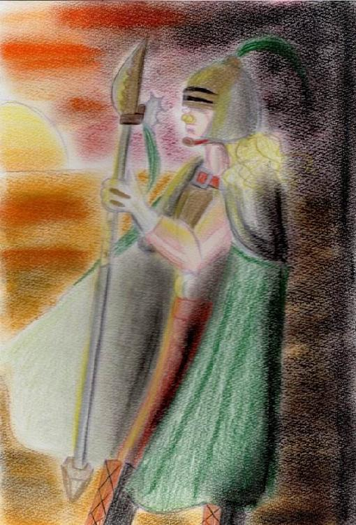
ラインハルトは孤独だった。気がつくと彼は捨てられた。私と同じだった。子供のころ彼は一人その顔を隠し誰もいない森のほとりの村の近くで隠れ住んでいた。彼の顔はひどく歪み一生懸命集めた命をつなぐ水面に映った自分の顔を見て彼は泣き続けた。
言葉は村の人間から風視で盗みとった。文字も何もかも。彼が風の騎士と呼ばれる所以の身のこなしはびくびくと人目を避けて誰にも気づかれぬよう育ったから身についた。彼がひどく癖字だったのは誰にも読まれぬように日記を書き記していたから。彼はある夜、お祭りの後地で仮面を拾う。彼はようやく人目を気にせず生きられる方法を見つけた。彼が初めて手に入れた仮面を元にラインハルトは木彫りの仮面を作る。
ラインハルトはこの忘れた世界を旅をして昔の事もなんでもないことも書いてゆく。彼は風視でずいぶん善行を重ねてゆく。なりたい自分を目指して彼は技を磨いてゆく。ラインハルトの技は誰にも理解されず放置される。彼はやがて自分だけしか風使いは居ない事を知った。それまで風使いの技を残そうとしてはまた誰にも認められず彼の戦いの歴史が刻まれる。彼は頑張れば頑張るほど人々が理解してくれるものだと思い込んでいた。素顔をさらせないラインハルトにとって人々の笑顔は何よりまぶしかったから。
ラインハルトはある日ふと思った。素顔を見せても人々はすんなり自分の事を認めてくれるのではないかと。残酷な事に風視は直後の人の心しか読めない事だった。彼は瞬く間にその場をおいたてられた。風の騎士ラインハルトではなくただの化け物として。彼が泣いていた子供のころ感じた醜さを彼らはラインハルトの精神に再び刻みこんでゆく。何もない荒野を彼は歩いてゆく。そして泣き叫ぶ。あの日、幼い彼と何一つ変わらず。誰も理解されない。
ラインハルトはやがて自分を持ち上げるのは彼らが自分を信じてくれてるのではなく、敵にしないように思い通りに働かせるためだったと知ってしまう。風視は人の表面的な思考や感情を覗くにすぎない。
今までだまされていたとラインハルトは狂ったように槍の柄で大木を叩く。怒りと悲しみで前も見えない。それでも技の冴え具合は鋭く幹は切り裂かれる。技は自分だけは裏切らない。この時、そう確信して記録をしていく。
彼は日記に自分の技を記し、自分の後継者風使いが生まれた時このことを伝えるためある村に日記を貯めておくよう頼んだ。風使いは善であるとプロパガンダを彼は広めるため一層戦いの場を増やしていく。誰も信じることなくただ戦うため彼は逸話を残す。
ある日彼は素顔を少女に見て知られてしまう。彼女はラインハルトにおびえる事なく生まれて初めて顔を触れられた。それはただの興味本位だったのかもしれない。それでもラインハルトは人にやさしく触られたのは初めてだった。いつも石を投げられるか、槍で人を刺す感触しか人と触れられた記憶はない。しかしその時ラインハルトは歳を自分で数え初めて40を超えていた。そして少女は10歳に満たなかった。
ラインハルトは女性に触れた事もなく、女性が自分の素顔を見せた時の嫌悪感は男性を大きく上回り風視がひどくきつく感じていた。更に性交のときの感覚がじかに伝わってくるのでラインハルトは生涯誰とも愛を育まなかった。
ラインハルトは、少女のいる村にたびたび訪れるようになる。少女はそのたび彼を喜んで迎いれた。少女の純真な自分に向け入れる尊敬が心地よく初めて人を心地よく思えた。ラインハルトは彼女に対して何でもしてあげたかった。彼女の騎士として生きたかった。それでも彼の心は孤独で彼女にさえ心の内を明かす事はなかった。
やがて彼女は美しく成長していく。ラインハルトのうちで欲望が渦巻く。彼女を慰み者にしたかった。彼女なら自分を受け入れてくれるのではないかと、いつか理解してくれると錯覚していく。彼は彼女の物を集め計画を練っていく。風の騎士の自分が疑われることはない、計画は遂行できる。確信している。
このころには彼の信望者は多くいて彼らをだましてなんでもできる。所詮誰も理解者のいない世界など未練もない。その気になれば自分と比較できる人間などいない。一度の過ちは許される。そのために人に尽くしていこう。そう晩年のラインハルトは考えていた。
やがて美しさがもっとも輝く年ごろになった彼女には思い人ができた。少しばかり遠征に出ていたラインハルトは知るなり怒り狂いすぐさま村へ赴き彼女の元へきて彼女をさらおうとする。彼女は泣いていた。勝手に両親が縁談を進め、愛のない結婚が間直だった。そしてラインハルトは手を伸ばし彼女を抱きあげ村から両親から彼女をさらっていく。
ここで日記は途絶えている。
ラインハルトの日記はアンドゥーシャの心の成長に大きく影響していた。そして男性の嫌悪感も凄まじく刻み込んだ。男が女性をどう扱いたいか、どんな男も性根は同じだと。あれほど嫌悪していた人間と同じことをするラインハルトの事も嫌いだった。そしてそれを信仰している寺院の人間も嫌いだった。最初から彼らも誰もかも嘘吐きだった。しかしアンドゥーシャがそれを言えばアンドゥーシャが嘘吐きになるという矛盾。最初から感じていたこの世界の汚さ、もうお父様のことも汚らわしかった。
「きたない、きたない！！」
そう彼女は吐き散らし力を乱暴に使う。
早く自分の足で歩きたかった。ラインハルトが禁止していた事にその近道があるのではないだろうと思っていた。ラインハルトは自分の事をだましている。そう思う時もあった。彼が禁止していた事は凄まじい殺傷力があった事もあり、自称聖人君子の彼も日記を読み進めるごとに信じることはできなくなっていく。
アントーネもアンドゥーシャの変わりように心を砕いてはあきらめていく。人を育てるのは並大抵のことではない。まして人を読むなど知らない事はハンデで二人は確執を少しずつ、少しずつ創っていく。アントーネはラインハルトを例題としていい人間に育てようとした。それが許せなかった。そんなふうにたった一人の風使いの事をただの水使いの彼女が知ったように話しているだけではらわたが煮え返る。
「なにも知らないくせに！！いい加減にして！」
授業の最中ついに堪忍袋の緒が切れ私はアントーネを壁に叩きつける。
「きゃあ！」
アントーネはコホコホと咳をして強い目でアンドゥーシャの頬を叩いた。
「そちらこそいい加減にしなさい！！あなたは人間として失格です！」
「うるさい！私に指図するな！なにも知らないくせに！！」
「つっ！！育てたのに、大切に育てたのに何でそんな事を言うの！いつもいつもどうしてなの！！」
アントーネは悲鳴のように喚き始めた。その時アントーネの心の奥で隠されていた憎悪の炎が私を焼いた。
「きゃああああああ！！」
私はその場を離れ叫びながらどこをどう走ったのかも知らない。迷路のような寺院を走って走った。
アントーネはポツリとやってしまったと自責の念にかられ何も行動できなかった。
私は寺院の柵を飛び越えてただ荒野を走って行った。誰も追ってこなかった。私に味方なんていなかったんだ。汗が私の影に振り零れる。ラインハルトが言っていた事は本当だったと思うと涙があふれ足がもつれ倒れる。
それでも誰も来なかった。
―人は自分で歩く事でしか前へ進めない―
私の傍らでラインハルトが呟く。そうだったね、ラインハルト・・・こんなに悲しくてもあの優しい唄を歌ってくれる人は迎えに来ない。私はこうやって誰にも理解されずに一人死んで行くんだ・・・・
「うわあああん、うわあああああ・・・・」
風が荒野に涙を運んでいく。
Act.11
風が吹く荒野を一人歩く。後ろは見なかった。やがて疲れて座り込んだ。ごわごわした制服は汗で湿っぽくって最低だ。・・・のどが渇いた・・・このままここで干からびるのもいいかもしれない。誰も理解されないのは死んでるのも同じなのだから。
遠くから声がした。
「・・・・誰？」
風が人の方向へ向いておらず読めない。砂埃がひどく視界も悪い。やがて待ってみるとそれは小さな影で頼りなかった。
「いた～・・・・アンドゥーシャ様、いた～」
フルーニャだった。どうやってここまで来たのか・・・わからなかった。喉がかすれて声が出ない。彼女はいつものように笑って私に抱きついてくる。水使いの能力、水を集めて小さな両手でその水を受ける。
私はゆっくりと飲まされる。別に飲みたくもないのに体は生きようと一杯二杯と飲んでいく。砂混じりのこの水の味は生涯忘れることはなかった。
フルーニャは満足したように私の傍らで座り込む。触ると私と同じように汗で湿っていた。
「よかった、本当に良かった・・・」
彼女は安堵してにっこり笑う。
「なんでここに・・・・」
「理由ですか？ないです。フルーニャはただあなたのそばがいいんです。」
そう言ってまた馬鹿みたいに笑う。彼女の強さに押しつぶされそうだった。私はフルーニャを見つめる。彼女も見つめ返す。フルーニャは死んでもいいからここへ、私の元へ来たのだろう。・・・・ただこんなちっぽけな私のそばに居たいのか？
この子は、フルーニャは死なせたくない・・・そう考えがよぎると力がどこからかわいてきた。
「・・・帰ろう」
私はふらふらと立ち上がる。このままでは二人とも死ぬだけだ。よろけるがフルーニャがそれを支える。どうしてそこまで私を信じてくれるのか分からない。日が照りつくこの荒野で私に追いついたフルーニャの方こそ体力を消耗しているに違いない。
ラインハルトの日記にこうあった。―信じる人がいるから強くなれる―
なら私はまだまだ弱い。風使いの道はまだ志半ばだったのだ。学ばなければ・・・・この忘れた世界であの美しい唄を歌ってくれる人を探せない。
まだ生きるには大人の元の庇護下に居るしかない。悔しいがこれが現実だ。
一歩一歩歩いてゆく。陽に照りつけながらぼんやりと考える。ラインハルトは仮面を手に入れて人とまじりあった。なら私にも仮面が必要なのかもしれない。心の仮面が。自分自身をだまして人を欺く。アントーネがしていたように私も人に直接悪意をぶつけず隠せば今以上にうまくやれるのかもしれない。
アントーネがあそこまで私に敵意を持っていたなんて知らなかった。優しく笑ってくれたアントーネは全部作りものだったんだろう。アントーネの優しさは作りものだったんだ・・・・
「・・・ふふ」
アンドゥーシャは小さく笑った。
何だ、風視は万能じゃなかったんだ・・・風視の結果を全部信じるなんて浅さかだったのか。アントーネのウソつき。もう信用してあげないからね・・・・
村に着いたころにはどっぷり暗くなっていた。
帰るとフルーニャは引き離されてしまう。
「あ～ん、アンドゥーシャ様～」
どこか間の抜けた声が遠くなっていく。私は彼女にお礼を言えず代わりに両手を振った。
そして私はアントーネを探すが寺院の人間が私を離さなかった。アントーネと同じように彼らは私を見ず、風の騎士ラインハルトの後継者が無事だったと喜んでいた。風視で水使いの子供たちは総動員で捜索に回されたようでへとへとな感じが伝わってくる。そして・・・アントーネはいなかった。
アントーネは村から消えてしまった。私はアントーネにごめんねもさよならも言えなかった。私が三人目の家族を失った日だった。
新しい教育係が私に就いた。初老の女性だった。ラートと自己紹介された。ラートの心は力強く彼女が何人も育ててきた自信があふれていた。
「アントーネは・・・・？」
アンドゥーシャは涙を溜め問う。この涙の意味はなんだろうか？アントーネにいいたい事でもあるのか？今思い出しても遠すぎてわからなかった。そう、アントーネはこちらに踏み出してくれずアンドゥーシャはそのすべを知らない。今だったら彼女になんて言おうか？そんなの考えても無駄か。
私の問いは無言で消された。彼女から吹く風は大きくなればいつかわかるさと呟いていた。私はもうアントーネに逢えないんだなと悟った。どこか遠くで暮らすのだろう。そういえばアントーネの事を全く何も知らない。どうしてここで働いていたのか、どこで育ったのか何も知らない。私は私の事しかこなせなかった小さな子供だったのだ。
ラートは快活でよく歌いながらパンを焼いた。私たち二人も参加させられ黄身をパンの生地に塗ったり、鳥の形のクッキーをかたどったり、パイ生地を発酵させた。私にはどれもが失われた家庭のにおいを味わう経験となった。ラートは大きく怒ったり、リアクションの大きい女性だった。
そしてラインハルトの日記を読むときには違う人間が付き添われるようになった。寺院の人間だった。ラートはどうやら外部の人間でアンドゥーシャとフルーニャの二人は孤児院の子供たちだとしか見てなかったようだ。ラートは大きな体をゆすって寺院の子供たちと共にパンの甘いにおいを私に覚えさせた。優しい人だと感じた。それと同時にアントーネは私の事を御姫様のように扱ってくれていたと知った。
「ラート、好き～」
フルーニャは私にはない素直さでラートに甘えている。私にはそんなそぶりはあまり出来なかった。心の奥でラインハルトが泣きながらおいてゆかないでくれと懇願する。今の自分が変わるとラインハルトも消えてしまうのだろうか？もう一人の自分のラインハルトは情けなくて意気地無し、いつも泣いて泣いて、私は彼とフルーニャの世話に大忙しだった。
ラートはさっきも言ったように私を特別扱いしなかった。私がどんなにせがんでもイチゴのジャムは出してもらえなかった。代わりにパンを手伝うとブドウのソース入りの硬く焼き締めたパンを内緒に私とフルーニャ二人にくれた。彼女は夕日の向こうを差してこう言ったものだ。
「あっちに私の故郷があってブドウを沢山作ってんだ。ワインにしたりジャムにしたり・・・・ずっとあのまま暮らせるんだと思ったんだけどね」
そういうラートの心がガザガザな感じがして私は彼女の手を握る。そうすれば今度はアントーネと違ってこの人の事をもっと知って、そばに居てくれるのだろうと信じていた。ラートはそんなアンドゥーシャを力いっぱい抱きしめた。
「いたあいいたあい！」
アンドゥーシャは声をあげて叫ぶがちっとも嫌じゃなかった。ラートの事が好きだった。何も知らないラート、それが心地よかった。普通の女性はこうも温かいのかと初めて知ったのだ。
日記を読むのにその頃から飽きてしまった。いつからかまじめにページをめくっているふりをしてただラートの鼻歌や子供たちの噂話に耳を傾けラインハルトから心が離れ出した。しかしカビ臭いラインハルトの日記の情念は凄まじく、開いてるだけでラインハルトが耳元で怨念がましく恨み言を言っていた。
私は試しに寺院の人間に日記の内容をばらしてみた。結果は散々だった。彼らは怒り狂い彼がいかに素晴らしい人間だったのか説く。アンドゥーシャは眉を曲げそれを仕方なしに聞いていた。
彼らが熱弁を振るえば振るうほど私はラインハルトの言葉に良いようにだまされていた事に気がついた。
―人間を信じるな―
それは彼にも言えることではないか？何故一人の人間である主張もブレブレな彼を信用しなければならないのだろうか？よくよく考えてみると彼の人生はこの忘れた世界が嫌う嘘の塊じゃないか！
というわけで彼の日記を読むのは技の一部分だけにした。だって彼は死んでる。死人の言う事よりラートと料理をした方が良かった。フルーニャとそのころから彼女の取り扱いもわかってきて何か荷の重いものが取れた気がした。
もう一人の私が世間の人と渡り合って本当の自分は遠くでそれをラインハルトと一緒に見ている。そんな感じだ。ラインハルトは出会った人間に始終文句をつけ面と向かって言えずにすねている。
私はハッと気づく。
「これがラインハルトが言ってた仮面なのね！」
そうだったのだ。みんなウソつきで口に出さないだけだ！楽に生きていいんだと悟った私は日記を読むのも放棄して修行と偽り風使いの技を自己アレンジしていく。
ラインハルトは槍使いで私にはそれは大きすぎた。だからアントーネが残していった日傘を使うことにした。何かアントーネと繋がっている気がする。いつか風視を自分のモノに出来たら物に宿った気持ちを感じられるのだろうか？アントーネがどんな気持ちでこれを使っていたのかさえ分からないが・・・・
フリルがあしらわれてるまだ新しい日傘、アンドゥーシャはそっと抱きしめた。
風が吹いてあの季節を呼び覚ます。花が乱舞して意味のない花びらが世界を回って色で世界を染める。ただ私はその色に染まって足が動かない。花はただ私の影を消してゆく。
アンドゥーシャ数え年にして14歳。花の季節。独り花園を歩いてあの人からのメッセージを唄う。子供のころは私を抱きしめてくれたあの人はもう私が抱きあげてもおかしくないほど小さな体で詩を紡ぎあげる。彼女はサアっと持っている青いジョウロで花に水をやりながら舞い続ける。
アンドゥーシャは小さなころ花を踏みにじった。今は抱きしめるように寝っ転がって腕を伸ばす。彼女の腕は細く長く育ち制服はなめらかになりその肢体は美しく曲線を描いていた。銀髪は細くしなやかに甘く香り瞳はラインハルトの憂鬱で憂いに満ちて人を魅了していた。寺院が求めていた風の騎士の完成であった。
彼女はラインハルトの言葉を学ぶのをさぼるようになり次第に言葉少なくなり自分の体の変化を受け入れるようになっていった。
しかし男達の感情は気持ち悪い。拭っても拭っても後で夢想して妄想して私は汚される。もうそんなものを視たくないのに目の前の男の子を信じる事が出来ない。彼らと同じように私は男を信じられない。この体の何にそんなに執着するのか分からない。私は女だからこの溝は埋まる事はないんだろう。
ラインハルトのおかげで男性に拒絶感を持つようになり人の事を読むのもおっくうになっていったが人と交わる仮面は手に入れた。もう誰も本当の私たちを知らない。風使いは人をだまして生きてゆく。ラインハルトの日記がそういう。風使いこそ真の悪だと。
「う～ん・・・・」
日傘を手にして村に出かける。もう寺院の人間たちも何も言わなくなった。アンドゥーシャは考えていた。寺院の人間は何を考えている？この寺院は風の騎士の日記をどうしたいのか？
私は仮面をつけて人と接する。嘘をついてだまして生きてゆく。彼らはそれを受け入れ私を称賛する。・・・・はずだった。
「アンドゥーシャ！！」
「アンドゥーシャはどこですか！！」
寺院のぺてん師たちが私を探しまわる。私は笑いながら寺院の泥臭い屋根を登ってジャンプする。ウインク一つ、高い柵はひょいと抜けられ村へ遊びに出た。古株には無理な運動もよいところだ。彼らは髪に白いものが混じりろくに動けもしない。私の体力に追いつけずに次々に倒れこむ。私はあの人の歌を歌いながら走り回る。風が吹きあの人の歌声がエンドレスリピート、ねえ知ってる？好きな人の声なら永遠に聴いてられるのよ。
私は人々とうまくやれるかテストする。村人には昔からいるアンドゥーシャは水使いの弟子の子供と思われていた。彼らはアンドゥーシャの知っている人間と比べると純朴で騙しやすかった。
私は村を走って走って村人と交流という遊びをする。力を試す。それ以外何もしない日々。ラインハルトはいまだくすぶり続けアンドゥーシャの中には彼を慰めるものはなかった。自分以外彼を理解する人間は居ない。だって彼はもう死んでいる。誰か本当にラインハルトを理解してくれるそんな人に出会わせてあげたかった。それが生きる目標の一つ。
夜フルーニャの寝顔を見るのがこのころの彼女の日課となっていた。フルーニャはいつまでも幼く頭が弱かった。まるで妹のように思えて愛しい。
「あなたこれからどうする？」
もちろんフルーニャは答えない。フルーニャはいつまでもこの生活が続くと考えていた。
寺院に育てられた子供たちは水使いとしてどんどん世界へ旅立っていく。喧嘩したあの子も殴って泣かせたあの男の子も消えていく。そうフルーニャもいつか旅立つのだろうか？アンドゥーシャはどうしてもフルーニャの明るい未来を想像できなかった。そして自分の未来も・・・
戦闘に特化した風使い。ずっと隠した風視以外監視されているから情報は筒抜け。それがアンドゥーシャに筒抜け。何度も商談をつぶしてきた。そう、風の騎士は売り物だったのだ。皆が珍しがる風使い。強く清らかな乙女。
寺院は次の手を考えていた。風使いを増やす。アンドゥーシャはいつか男の元へやられるのだろう。それを逃れてもいつかは・・・
「あのぺてん師ども！！」
月夜の差しこむ部屋、アンドゥーシャは身震いする。最近男たちの目が汚らしい。ラインハルトが恋い焦がれた女性の妄執に取りつかれているようにアンドゥーシャは寺院の男達の中で何度も犯されていた。いつの日かぺてん師と寺院の人間をさげすんでいた。
ラートはアンドゥーシャが身なりを自分で何とかできるようになるとやがて次の子守先へと消えていった。アンドゥーシャは笑顔で送れた。いつかはラートもいなくなってしまうのはすでに知っていた。彼女が今の二人の運命を知ったらパンを捏ねていたあの大きな手で寺院の人間をはたいていただろう。クスリとアンドゥーシャは笑う。
私は・・・どうすればいいのだろう？
一週間ほど続く花の季節は始まったばかり、まだまだ大地がむき出しになっている。
「帰りたいな・・・・」
ポツリと言ってころんと毛布にくるまった。いつどこへ帰りたいのだろう・・・自問するうちにいつのまにか寝ていた。優しく耳元であの人が唄ってくれるのが救いだった。
寺院の人間が次々に男を引き合わせる。遠目で私はとても幸せな女に見られただろう。しかし、私はそんなものを求めていない。
「あほか！！もっとましな男出して来い！！」
綺麗に着飾ったアンドゥーシャは次々に男達をのした。こんな人間などいらない。私は男なんていらない。
そして又寺院の人間の不評を買っていく。花の季節二日目ついに寺院の長老が私と話す事を求めてきた。長老は人の前に出てこないで裏から何かやってくるハゲだった。ハゲはハゲ、私たちの会話ではハゲで通っていた。ハゲ、もとい長老は私の横の畑の横を歩いていく。
「見なさい、今年も満開じゃ。これも風の騎士のお加護じゃ」
「ラインハルトは何もしないわ。ただ有名だっただけよ・・・ハ・・・長老」
彼はゆっくりと頷く。
「けれども彼は多くの人のために戦い救った。これも事実だ」
「でもその分、殺した。彼は誰かの代わりに殺しただけに違いない。ハ・・・長老の言ってる事は詭弁よ」
「では君は、アンドゥーシャはどうする？その力は我々が導いた。それは違いまい。ではその力を我々の為に使ってもいいではないかね？ラインハルトの奇跡を君一人でたち消えまた数百年眠らせるのか？」
ハゲは手を広げ問う。
「この村はラインハルトの為作られた。皆彼に救われ共感して作った寺院。そこにどんな血と汗の結晶があると思う」
「・・・知らない、ハ・・・長老の言う事は・・」
「君の力は稀有だ。儂が言うのは子を成せとも戦えとも違う・・・」
ハゲは私の目をじっと見る。
「君の眼にはこの世界はどんなふうに映っている？風使いはこの忘れた世界では生きにくいか？君は迷っている。そうだろう？」
「・・・ハゲ」
なぜハゲはそんな事を言うの・・・ここを立ち去れない理由をハゲは知っているのかしら？風視ができないハゲなのに見透かされてる？ハゲはどんな魔法を使うの？これが私の迷いだというの・・・？
「ハゲハゲうるさいわぁ！！」
ハゲもとい長老は頭に血管浮き出て叫ぶ。
「まあいい。陰でチクチク言われているのは知っていた。知っていた。知っていたんじゃああああ！！・・・現実は残酷じゃな」
血圧高くなりすぎて死ぬんじゃない？ちょっと心配した私はハゲという単語を控えるようにした。
「大丈夫よ・・・ハゲてもその年まで生きたじゃない。もう十分でしょ？」
「何の慰めにもなってない・・・」
年頃の女の子の言葉は突き刺さるようだ。
「うぉほん・・・アンドゥーシャよ、なぜこの村から出ないのか？儂は別にお前がどう生きようが知った事ではない。下の者はちょっかい出したがっているようだが・・・
子供の行く末を見守るという事はそういうことではない。我々は風使いを育てた。・・・水使いの子は水使いが多いという。数百年たってお前を得た。ならあとお前がどこかで子を成すのを待つのもいい。何かをやり遂げるのを記録するのもいい。好きにしろ。お前が風の騎士の技を身につけその技を練り上げたのに意味はある。お前は自由だ。だが我々はお前を見守っていこう
・・・大きな出来事がふとうまくいく事がある。それはわしらかもしれぬという事をゆめゆめ忘れんようにな。我々と共に生きるか、出ていって生きるか決めろ。もう子どもの時代は終わりだ。」
そしてハゲは去っていった。やっぱりハゲは食わせ者だった。こうしてアンドゥーシャは先送りしていった選択をしなければならなくなった。ここに残り寺院と共に生きるか、出て行って自らの道を進むか・・・・私はふと何度も村を出ては危険な目にあっていくのを思い出した。誰かの用意した食事を食べて暖かなベッドで寝ていたのが普通だった。私は恵まれていたのだ。そう、すべてはこの力のせいと思っていたが、力のおかげで今まで生き残れたといってもいいだろう。ラインハルトの様に傷つき人を殺すすべしか私は知らない。
フルーニャが私の元へ来る。フルーニャは私がいなくなったらどうするのだろう。きっと生きていけないはず。彼女はうろ覚えのあの人の歌をハミングする。
「そう・・・そんなに私が大事？」
フルーニャは茶髪を振り乱して応えてくる。ぎゅっと抱きしめらると彼女の体もすでに大人なのだと思いされる。・・・一つ私はずっと知っていた事があった。フルーニャの運命、フルーニャは私が居なくなれば娼館に売られることが決まっていた。頭の弱い彼女は水使いとしては生きてられない。フルーニャはアンドゥーシャを抑えるための存在それ以上でも以下でもなかった。子供のころに消えていった子たちはこんなふうに売られていったのだろう。フルーニャはきっとその運命を受け入れてしまう。彼女ならそうなるにきまってる。そしてボロ雑巾のようになって死ぬんだ。だから去る事が出来ない。でもフルーニャは違っていた。
最初から出会った瞬間からフルーニャは私を求め続けてくれる。裏切らない愛。それこそ私が欲しかったもの・・・
アンドゥーシャはフルーニャの細い体を抱きしめ笑いながら花畑に転がる。
「・・・決めた」
私は炎を見つめる。一枚一枚ページが焼けて彼の言葉が死ぬ。フルーニャはわっせわっせと無造作に片隅においていく。私はそれを一つ一つくべていく。
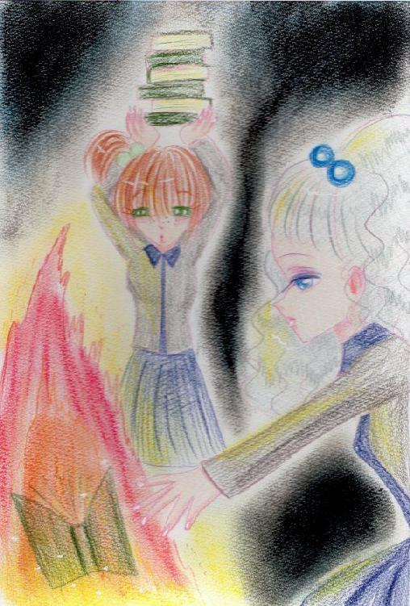
ラインハルトの最後の言葉は「この世界は捨てたもんじゃない。あなたに幸せが訪れますように」と書いて日記は終わっている。彼の言葉と気持ちはあっている。本心だ。
その後は昔話と統合して考えるしかない。でも彼はきっと笑いながら死んだに違いない。愛する人のために死ねるなんて、最後の瞬間でも彼は幸福に満たされていたことだろう。
ラインハルトは恋人たちを逃し時間稼ぎのため愛する女性の家族と対峙する。ラインハルトは決して愛する人の親族を誰も傷をつけずに足止めたのだ。彼の力量をもってしても数に押されやがて劣勢になり無数の槍に貫かれ殺された。その時の状況はどんな子供も知っている。彼は風使いの技を使い恋人たちの足取りを消して、あんなに人間不信だった彼が仮面を外し風の騎士ラインハルトと悟られることなく死んだのだ。
そして彼は伝説になった。彼が命を賭け守った物はなんだったのかは言う事もない。
灯が私の顔を照らす。その横にはフルーニャがいてくれる。
私はラインハルトのように誰にも理解されないと思っていた。でもそれは違う。愛は乞うものではなく分け与えるものだった。私は最初からこの結末を知っていながら彼の言葉を読んできた。だからなぜあの彼がこんな結末を選んだのか分からなかった。でも違った。彼は日記とは別の物語を抱えていたに違いない。私は少しばかりのラインハルトの人生をかいつまんで知ったかぶりをしていたんだ。
だから私はあなたと同じように生きることを決めたのだ。
「だって私はあなたの友人だもの。」
私はまだ昇りきっていない朝日の向こうへと歩いていく。さよならラインハルト、私は往くわ。貴方と同じように愛する人の元へ・・・・私はあなたを消してもう誰も風の騎士を作らない。誰もラインハルトにしない。
第三章 意気地無しラインハルト 了
第四章 君を探す空の下で
幾戦のつわものをたたきつぶし、いくつもの村を焼いた。あのころの空はもう見えなくなりきっとあなたさえ見失ってしまうだろう。けれど忘れないで、私はあなたを愛していたと。何度も何度も叫んだ。あの日からずっと、これからも、永遠に。
話はAct.8の後に戻る。アンドゥーシャはクイゼ山の遺跡に立ち寄る。コンタミ川の源流の遺跡はアンドゥーシャ達によって掌握された。アンドゥーシャ達は遺跡を停止して遺跡は死んだ。アンドゥーシャ達は遺跡を発掘していく。遺跡は不可解なつくりをしていた。アンドゥーシャは頭では理解できないが、風視の力だろうか？これによって何をすればどうなるかを知った。
アンドゥーシャは玩具を捨てるように遺跡が作っていたものをぽいと捨てる。科学者たちはアンドゥーシャが触っても安全だと指示されたものだと判断してそれを拾い奪いあう。
「そんなに急がなくってもこんなものいくらでもあるわ！」
アンドゥーシャはドアのパスワードを打ち込み次の部屋に行く。そこにはさっきまでベルトコンベアに載っていたがらくたが山積みにされていた。アンドゥーシャはくるりと皆の方へ振り向いた。腰に手をまわして宣言する。
「これでおしまい！この遺跡の隅から隅へ行ったわ。満足？」
アンドゥーシャの言葉を無視して科学者たちはスケッチや探索を始める。
「お～い？やっほう？・・・・はぁ」
アンドゥーシャは遺跡に命じ椅子を出現させそこへだらしなく座り込む。
「くさくない？ここ」
「臭いです～というか酸っぱいもののにおいがします～」
ルカも同じように椅子に座ろうとするがアンドゥーシャが椅子を消して地面にへたり込んでしまう。
「わ？」
「あははは！驚いた！？」
アンドゥーシャとフルーニャ、二人は手を叩いて笑う。
「いたずらはやめてください！」
ルカはやれやれと服をはたく。
「きっとこの遺跡はこの物を作ったり磨いたりしていたんでしょうね。その際、化学物質ができてそれが垂れ流しになっていたというわけですね」
アンドゥーシャはう～ンと唸る。
「あのきれいな川はおじゃん？もったいない！きれいなのに！」
「きれいより人が住める方がいいですよ。まあ・・・住めるまで何十年もかかるでしょうね」
「じゃあ、私は知らないわ。元に戻しちゃいましょうよ。死の川なんてちょっとカッコイイじゃない？」
「そんな・・・物ですか？あなたにとってこの状況は？」
「そうよ、綺麗なものは自分のモノにしたい。女なら誰でもそう。本音で話せば女は自分以外の富があふれるものなんて許せないわ！」
「ふう・・・この歴史を動かす発見した力があるのにどうしてそうも・・・」
アンドゥーシャはすねた子供のようにポツリとこぼす。
「だってここ風が吹いてないもん・・・・」
ルカはぽかんとしたが思わず噴き出した。
「子供みたいな人だ。全く・・・・」
「・・・でこの成果はどうなってるの？」
「大収穫ですよ。考えていたよりどうしていいのか分からないほど我々は過去の遺物を手に入れました」
そう言ってルカはアンドゥーシャの頭をポンポンと叩いて立ち去っていく。
「なんですか、あれ！アンドゥーシャ様に失礼な！！・・・ってアンドゥーシャ様、顔が赤いですよ？」
「な、なんでもない」
アンドゥーシャはごまかすようにフルーニャのおでこにキスをする。
町に戻ると研究者たちはがらくたを詰めた馬車でどこかへ行ってしまう。ルカはいつもと同じように不愛想にコインを詰めた袋を渡してくる。しかしアンドゥーシャはすぐに見抜いてしまう。彼が考えている事を・・・
アンドゥーシャはルカに囁く。自分でも怖くなる。こうやって人の心につけいれると自分でもわからなくなる。
「知ってる？生きた遺跡がほかにどんな事を考えてたってことを・・・知ってる？あの遺跡一つじゃ意味がないのよ。もっと遺跡が集まれば・・・世界が、歴史が動くわ・・・」
ルカはばっと身構える。どうやら反応できなかったらしい。彼は振りほどこうとする。が逃がさない。振りほどこうとする手を捕まえ握りしめる。それだけで彼は私の言葉を反芻していく。
「遺跡の使い方を知ってるのは私だけ。私が欲しいでしょ？ずっと欲しいんでしょ？」
「やめてください！子供が大人をからかってどうするんですか！？」
少し彼は声を荒げる。もう少し・・・もっと深く・・・・
「だって貴方達は、組織は、貴方は遺跡を作った人間たちを見返したいんでしょ？使ってもいいのよ。私の事、使って、遺跡を征服するの。それは・・・忘れた世界が何かを思い出すときなの・・・」
ゆっくりと彼は私を人間ではないように見る。見慣れたあの目つき。一つしかない目で訴えてくる。もう入ってくるなと。逃・が・さ・な・い。
「私たち・・・いい仲間になれそう」
そう言って一呼吸おいて離れる。彼はだらんと放心するがすぐに科学者たちと同じように歩いていく。
彼は振り向きこう私に言い聞かせるように言う。
「それであなたは満足なんですか？」
「ええ、だって・・・力があれば・・・あの人の元へ行ける。そう思ったの。今まで力を注いできたことも重要だけどあなたたちみたいに知識も必要に違いないわ」
わざと軽口をたたく。ぺろりと舌を出す。
「行きましょう」
フードをかぶりなおしたルカが手を差し出す。
三階建ての建物にびっしり本が詰まっている。アンドゥーシャにはそう感じられた。次にラインハルトの日記を読むようなあの誰かが頭の中を何かで満たしていくあの感覚。アンドゥーシャはラインハルトの日記で覚えたその何かを頭の隅にやっていく。
「ああ、そうか・・・・」
私は気づいてしまった。誰かが何かを考えて書いた文章の念を風視で読んでしまうんだ。ラインハルトはそんなことはなかったのに・・・風使いといっても私とラインハルトは違うんだ・・・風視の力は私の方がずっと強い・・・
「どうかしました？」
フルーニャとルカが不安そうにこっちを見ている。私は努めて元気に振る舞った。
「カビ臭くてめまいがしちゃった！」
「もうアンドゥーシャ様ったら～」
ルカはそっけなくついて来てくださいと先を行く。
彼の思念はほかの人間と違って面白い。ルカは常に何かに絶望していた。遺跡に死地を求めてるかと思えば飢えに似た知識欲にさいなまれる。
彼はそんなふうに探られているとも知らずに古びたソファに客人を座らせた。
「・・・甘いものが好きなんでしょうが・・・あったかな？」
「ぶっぶー！アンドゥーシャ様はイチゴが好きなんですよ！」
フルーニャは得意げに胸をそらした。
「・・・ではこういうものはどうでしょうか？」
彼が出したのは白いチーズに似たものだった。
「チーズではありませんよ。山羊の乳を乳酸菌で発酵させたヨーグルトというものです。イチゴが好きなんですよね・・・・おーい、イチゴのジャム、有ったか！」
「貯蔵庫に置いてあったと思うけどなんでー？」
場所に似合わず若い女性の声だった。横の部屋から壁越しに聞こえてくる。
「客人に出すんだ。」
「勝手にすれば？邪魔しないで！」
やれやれとルカはお茶をとりあえず出してくれて探し物を取りに行った。
「ふうん・・・」
ちょっとヨーグルトやらそのままを頂いてみた。ふむ、酸っぱいけどチーズとは違う。この忘れた世界のあちこち行ったけど彼らはもっと私よりあちこち行っているみたいだ。組織の元に居れば珍しいものを食べれるようだわ。それに女性でもルカのように隻眼でも気兼ねなく働ける場所でもあるようだ。能力重視ってやつか。いいな、それ。
外を見ると花の季節を終え元の生活に戻るみんながいる。私はジャムが来るまで待っていると人の波の中ジュースの入ったコップを３杯持ってえっちらおっちら走っていく変わった帽子をかぶった少年が目につく。
「待ったかな？混んでてさ」
「ううん、いいの。こうして貴方が居てくれるのが何よりうれしい」
彼は彼女と見受けられる女の子と小さな子どもとどこかへ歩いていく。
私はああやって駆けよるカップルがちょっとうらやましい。ラインハルトがもし生きていたら彼の力になれたのだろうか？それとも泥沼になるんだろうか？
少年の帽子がもぞもぞ動く。
「俺のポップコーン、キャラメル味にしろっていったろ？」
「君にはバター味がちょうどいいね」
ひょいと青いカナリアが出てきてポップコーンを摘み食いしていた。
「お待たせしました。」
ルカの声にハッとなって彼の方へ意識が向き私の意識は逸れ、少年たちはどこかへ行ってしまう。そう、このガラス窓のように時間が巻き戻るなんてないのだ。
あの日は戻らない。帰ってきてと私は叫ぶ、誰も来ない。ここは一人だけの世界。だから私は唄う。貴方が帰ってくるまで。貴方はすぐに疲れて寝てしまうのだからいつ帰ってきてもいいように布団を干して待っている。きっと明日には帰ってくる。
「ここがいいかな・・・・？お～い早く～！！」
アンドゥーシャは大きく手を振って何もない荒野の真ん中で叫ぶ。彼女が叫んだ方向から大きな金属の塊がのっそりと近づいていく。列車である。列車は蒸気を吹き出しレールも何もない荒れ地を進んでいく。
「もっとスピードあげなさいよ！」
アンドゥーシャは日傘をぶんぶん振り回す。アンドゥーシャ歳は20。北の名前もないただ冷たい風が吹いている大地に列車が走る。ルカが悲鳴を上げる。
「ダメです！これ以上出力上げると車体が持ちません！！」
「だからもっとレアメタル使えって言ったでしょうが！」
「ほとんど鍛造できないんですから無理ですよ！もっと使いたかったらそういう遺跡発掘してください。発掘王！」
車体の作りが弱く燃料機関の出力をほんの少しでも上げると今にも壊れるような悲鳴を上げる。
「ああああ！せっかく作ったのにいいいい！！発掘王のバカ！！脳筋！私の可愛い列車がああああ・・・・」
女性の悲鳴と共に巨大な金属の塊は停止する。
「どういうこと？説明しなさいよ！」
アンドゥーシャの問いに答えながら車体は蒸気を爆発のように噴き出す。
「だから燃料機関の性能が高すぎるんですよ！運動エネルギーについてこれずに壊れるぅぅううう」
ルカが続けて言う。
「・・・・だそうです。専門家の意見として彼女の意見は参考にしてあげてください。」
アンドゥーシャは鼻息荒くつくと列車に向かって聞く。
「案はあるの？」
「レールを作って摩擦を軽減すれば通常運行はできると思いますよぉおおお・・・・ああああ、私の可愛いプロトタイプ００１ちゃんがぁあああ」
何か車体の中でハンマー音が響く。
「もういい、戻りましょう。我が家バルゴへ。」
アンドゥーシャはひらりと列車の上に飛び乗る。
「出発進行！！」
「エンジン、再起動しろ！リョエ！」
アンドゥーシャとルカの合図に車体の中に居る女性は忌々しそうにレバーを立ち上げる。
「わかってますよっと！」
列車はまた地響きと共にねぐらへ帰っていく。
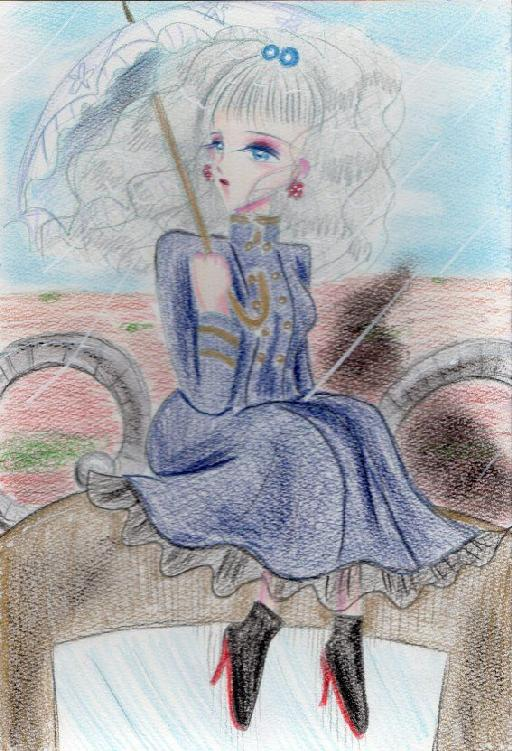
都市バルゴ、北にポツンとできた町、いや要塞のような風体であった。そこへ列車はよろよろと入りこんでいく。アンドゥーシャは風のように走っては人々から報告書を受け取って歩きながらそれらに目を通していく。通路はさながらジャンクで出来上がってると言っても過言ではなく、いたるところから得体のしれないガスや電流が飛び散る。アンドゥーシャは猫のごとくよけ日傘を定位置におきドカッと椅子に座り込む。
さっと紅茶が出される。
「お疲れ様です～アンドゥーシャ様」
「ありがとう」
「いえいえ～私、こんなことしかできませんから～ってあれ！？」
フルーニャはお茶を渡して消えるつもりが物に突っかかりこけそうになる。
「危ないわね」
アンドゥーシャはフルーニャを抱っこした。
「だいぶ狭くなったわね。また掃除しなきゃ・・・」
「私、一生懸命頑張りマス！！」
フルーニャは意気込んでいるのをアンドゥーシャは横目で見ながら又書類を手にする。
「そろそろ・・・お休みになった方が・・・よいのかと・・・」
「大丈夫、鍛えてるから」
「そうは言っても・・・もう三日もお休みになられてませんよ～」
「甘いもの食べてれば平気、平気」
そういってカスタードパイにかじりつく。上に乗っているベリーとカスタードを交互に食べる。
「おいしく出来たわね。」
「はい！温室・・・っていうんでしたっけ？便利ですよね、あれ！私も腕が鳴ります～・・・・っていうか寝て下さい～」
フルーニャはアンドゥーシャを引っ張ってベッドまで引きずっていく。
「ああ～最後までせめて・・・」
「いい加減にしてください！ラートが見たら怒られますよ！！」
「・・・ふふふ、ラートか・・・」
アンドゥーシャとフルーニャは昔を思い出しくすくすと笑う。
あちこちで不自然に膨らんでいく金属の町バルゴ。アンドゥーシャ達組織が作り上げたアジトであった。地下から水をくみ上げ人が住めるよう無理やり建造した町である。組織はこの町から列車を通し北の大地をより良くしようとしていた。
当初は組織の人間は反対した。そんなことはできない、我々は人々に知られてはいけないと。だがアンドゥーシャ率いる発掘部隊は燃料機関を発見しまずは列車を作り町から援助をもらいこうして寄り集めた発掘品のレプリカ、または発掘品そのもので失敗を繰り返しようやく列車は日の目を浴びたのであった。その歳月は半年という驚異のスピードだった。
「う～ん・・・これでいくらもらえるかな～」
「寝てください！！」
フルーニャは書類を取り上げベッドが用意されている部屋の鍵をかけた。もちろんアンドゥーシャにはそんなことは無意味だがフルーニャの顔にも目のくまができていたので安心させるために眠りについた。
組織はレールの建設を実施した。列車が通り物流が加速し北の大地は潤った。いつしかアンドゥーシャは発掘王と称されるほど有名な人間として忘れた世界に名をとどろかした。しかし、光が強ければ影もまた濃くなる。ワッシャ湖を境界にして南はレールの建設を拒否していた。その原因は自分たちでは理解不能である遺跡の力を使う危うさを感じ取っていたからであった。アンドゥーシャは風視で肌で感じ取っていたが南の連中は二毛作もでき比較的食糧に余裕があった。たいして北は貧しく使えるものは何でも使っていって生きようとしていた。
「・・・国を建国しましょう」
ルカがぼそりとアンドゥーシャに進言する。
「はぁ？勝手にやれば？」
アンドゥーシャはアクアパッツァを食べながら言う。なかなかナマズの身が臭みがなくておいしい。むぐむぐと食べる事に夢中でルカを無視する。ルカははぁとため息をつきアクアパッツァを指差す。
「その料理はおいしいですか？本来は海の海産物で作るのが正しいのですよ」
「海って何？」
オウム返しに聞く。
「海はこの惑星の７０％を超える我々の忘れた世界では見られない塩水の世界です。人々は・・・我々はそんなことも忘れてしまってるのです」
「別にいいじゃん。支障ないし」
「でもあなたは遺跡の技術を再現できる。いつか・・・あの森を超えて海を見たいと思いませんか？」
「思わない。私、他にやることもあるしね～」
ルカは頷く。
「ではそのやる事とは以前出会ったときに言った人探しですね。あれから私たちは考えたのですが戸籍を作ってみるのはどうでしょう？」
「戸籍？」
アンドゥーシャは食べるのをやめて眉をゆがませる。
「そうです。あなたが王となって人々を管理するという名目で戸籍を作ります。我々が支配下にある土地の物から税収と戸籍を頂きます。この戸籍から詳しい人物をあなたは読みあげればいいのです。この前話したところ、歳と性別は分かっているのですから一覧表が出来上がればかなり絞られてくるでしょう。やみくもに探すより手っ取り早いと思いませんか？」
「ふうん・・・・そうね・・・視えていた歳はわかってるのだから・・・そんな一覧表があれば確かに便利よね・・・私より年上で女性っていう条件で捜せばいいのだろうし・・・」
やみくもに放浪して自分の目と耳、風視で捜すより誰かがまとめてくれれば確かに今よりはっきり分かる。
「・・・やってみようかしら。国づくり。最近北の連中や南の連中がうるさいしここら辺で我々組織がどういう立場を目指しているとはっきりするのもいいわね。」
「そうですね。北は全面的にあなたを支持しているのですから北から始めましょう」
この年が帝国元年とさだめられた。
ここから帝国は北の人間から猛烈に加盟が殺到し列車のレールは伸び何もなかったバルゴは首都となり人々が行きかうようになる。
アンドゥーシャは呟く。
「この世界は本当は肥沃なのよ。あの人は言うの、この世界はあなたの為にあるって・・・・水がないだけ。花の季節の前に決まって雨季があってその後花がたくさん咲くわ。水源を確保できれば北でもたくさん食べ物が取れる。誰かが飢えることもない。きっとあの人もそれを喜んでくれる」
フルーニャは不安そうに彼女を見つめる。それはこういうことだった。
何気なくレールの建設地になるよう下回りをしていたところ・・・それと出会った。アンドゥーシャはフルーニャはよろよろと歩いていく。あちこち行っていてもそこだけ無意識に避けていたんだと思う。けれどこれは信じたくはなかった。変わり果てたそこを二人は無言で歩く。やがて大きな建物があり立ち入ってみると無人の廃墟となり果てていた。二人はただ石で造られた階段を上がりいつも月を見ていた部屋を訪れた。そこには二人の思い出があり、何もかもが失われていた証拠でもあった。
「うぅ・・・・うぅうっ・・・・」
アンドゥーシャの銀髪がほこりだらけの床に垂れる。
「何が・・・何があったの！」
廃墟と化した寺院、誰もいない村。かつて二人が幼少を過ごした故郷は無人で二人を出迎えた。井戸は枯れ、家畜の骨が無造作に捨て置かれていた。この忘れた世界では別に珍しくもない光景。何度も見たその惨状はアンドゥーシャの心をむしばむ。ここに居た人間はどうしたのだろう？アンドゥーシャに日記を燃やされ寺院の存在意義がなくなり崩壊したのか？それとも水が枯れて他の場所へ移ったのか二人に分かるすべもなかった。名もないような村だった。生きるのに精いっぱいのところだった。
フルーニャには水視をできる能力はない。そもそも水が枯れているので視るべき水もない。こんなのは間違ってる。まだ小さな子供も寺院は養っていた。帝国を作ってみてわかった。人を育てるのは大変難しい。それでも彼らは寺院は沢山の水使いの卵を育てていた。彼らがした事は間違っていたのか・・・恨み言も泣き言も言わず彼らはこの世界から、アンドゥーシャから消えていく。ラインハルトはただアンドゥーシャの肩をたたき傍らに居た。フルーニャはアンドゥーシャを抱き寄せる。
あなたは一人ですか？それはウソでしょう。その証拠にこの大地に立っているのはあなたの力ではない。太陽が回って月が沈むのはあなたの力ではない。風が世界を回っているは誰かの声を聞くため。けれどそばに居る人を助けられるのはあなたの力、あなただけ。
ルカの心の闇、彼はあの時の事をいつまでも悔やんでいた。自分が卑怯だったから自分だけ生き残ったと責め続けていた。遺跡、本当に人類に必要なものか・・・ルカは試していただけなのかもしれない。
「うお～い、ルカぼさっとしてんなよ！早く書類に目を回せよ！」乱暴な女子の声がルカをうたた寝から目を覚ませる。
「リョエ・・・・今何時ですか？」
「三時、夜のね」
彼女は書類を抱え去っていく。
帝国は幾つものかつて人類にあった物を蘇らせていた。電気。一日二十四時間という概念。一年が365日という事実。アンドゥーシャは一年を24カ月にした。つまり一カ月15日に制定とした。彼女いわく「なんでも昔のままじゃつまらないじゃない。時計と同じでいいじゃない。」だそうだ。
ルカは濃いめのコーヒーを自分でいれて書類を作成していた。この仕事は彼にとって特別なものだった。彼はルカは決して懐に人を入れない主義だった。アンドゥーシャを先に目を付けたのも彼だった。彼はこの仕事に自分の生きた証を求めていた。人を救いたい・・・と言っていた彼の分身というべき失われた半身。
彼の計画はこうだった。南東の不毛の大地に巨大な貯水湖を作る。それは南に取り入れる策の一つだったかもしれない。だが彼ら組織の思惑とは別にルカはこの貯水湖で人々を救うことなど考えてはいなかった。ただ大事な人の名前を刻みこもうとしていたのだ。これが大きな歴史のうねりになるとはだれも予想していなかった。
「ヤマセ・・・もうすぐだ。お前は永久に人々から呼ばれ続けるんだ・・・」
人口湖といってもなんこともない。遺跡から発掘された破砕機を使って頑丈な岩を砕き水を貯めればいいだけだ。発掘王はこれで北の帝国と南の町が歩み寄ればいいと祈っていた。完成間近人口湖ヤマセの中心部になるであろう場所に一人の男が叫んでいた。
「ここは俺の土地だ！俺たちの先祖代々の土地だ！！」
作業をしている帝国の人間たちは訝しげに叫んでいる男を見ていた。
「何言ってんだ、あいつ・・・」
「我々はちゃんと領主から許可をもらってるじゃないか」
「それにここは畑も放牧も何もできなかった本当に不毛な土地だったろう？」
岩だらけのへこんだ大地。掘っても水は出てこない本当の不毛の大地だった。
「やだやだ、やっとみんなまとまってきたのに変な奴が湧いてきやがった・・・」
男はさらに大きな声を張り上げる。
「ここは今日からおれたちの物だ！お前たちは出て行け！」
「・・・そうだ、出て行け！」
「帝国の領土にさせねえぞ、出てけ！ヤマセは俺たちの物だ！！」
「お前たちはもういらない！あの機械を置いてさっさと出て行け！」
一人、また一人と男の意見を持ち上げる声がのぼる。帝国の作業員は少したじろぐ。彼らはほんの少数でほとんどの作業員は南の土地の者だった。現場を押さえるルカは何事かと騒ぎを収めようとしたが無駄だった。彼ら南の人間にとって帝国など二十歳前後の少女にひれ伏してる臆病者にしか見えなかったのだ。
彼らは発掘物にとりつき横倒しにして騒ぎだす。ルカは、組織の人間たちはもともと研究員だ。彼らにとって争いなど向かず力自慢の農民たちを押さえられずに簡単に追い立てられる。
だがルカだけは独り抵抗した。破砕機に乗り込み脅しをかけるが更にそれが人々の騒ぎを大きくさせる。彼らの目的は最初から帝国の力を借りて貯水湖を作り出来たらそれをすべて奪う算段だった。
「馬鹿な事をやめろ！お前たちは知らないんだ。発掘王は・・・」
ルカは大事なことを叫ぶ。だが人々は嘲笑い彼を追い詰める。彼に人を殺せるわけもなく捕らえられてしまう。人々はフードに隠されていた傷を見て嘲笑を浴びせかける。散々石を投げつけ、作業で使っていたスコップで叩く。彼はやがて動くことがなくなった。死んでないのを男が確認するとルカは柱に縛りつけられ明日流される水に沈められる事になった。南の人間はそれを肴に酒をあおった。
ルカが言いそびれ彼らが聞かなかった事は発掘王は凶暴であり、その力をふるうのを何のためらう事はないという長年の付き合いでの忠告だった。
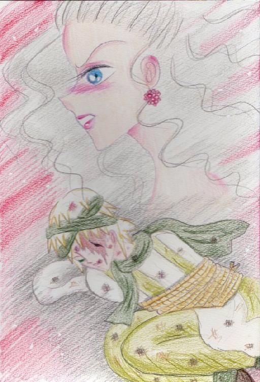
アンドゥーシャは撤退した帝国の人間からすぐにその知らせを聞き届けるとバルゴから単身出陣した。事件が起きたその日に飛び出した。
「行ってらっしゃいませ。アンドゥーシャ様～」
フルーニャの声を後にアンドゥーシャは怒りをみなぎらせ二時間で人口貯水湖ヤマセに降り立った。放浪をしていた日傘と貫頭衣を身につけて。それは彼女の武装であった。砂利と砕いた岩を踏みつけアンドゥーシャは酒盛りをしている人間たちの前に現れた。
一人が気づく。噂と違わないその姿に少しひるむ。
「お、おい・・・見てみろよ。あいつ・・・発掘王に見えないか？」
「馬鹿言え！バルゴからどれだけ離れてると思ってんだ！ただのコスプレだろ！」
はははと笑う男たちだったがアンドゥーシャはらんらんと怒りに満ちた表情で一歩一歩近づいていく。
「おいおい・・・なんだよ。あっちいけよ・・・・おい」
「うるさい」
アンドゥーシャは軽口をたたいた男の腕を切り落とす。惨劇の始まりだった。発掘王に言い訳など通用しなかった。嵐が吹きつけ彼女は次々に南の人間の足を使えなくしていった。苦悶と怨嗟の声で辺りは一杯になった。それでも彼女は風の刃をふるい続けた。
アンドゥーシャは血の一滴もつけずにルカの元へ現れた。ラインハルトとルカの今の姿がぶれる。ラインハルトは醜い顔立ちでそれを仮面で隠していた。今のルカは技と南の人間たちがその左目の傷を晒すように縛りつけていた。先ほどの惨劇は間違いなかった。あれはあれで正しい。
「帰りましょう」
ルカは首を振って何が起きたのか理解して自分を責めた。彼女は何も言わずただ戒めを解いた。破砕機をすべて回収させアンドゥーシャは全てを破壊し尽くすつもりだった。それをルカがうわ言で言う。
「あいつ・・・あいつの・・・名前の湖だけは・・・壊さないでください・・・」
アンドゥーシャは最後の工程を済ます。水が雪崩のように流れ込んでくる。動けない人間はほとんど死んでしまった。
朝、生き残った人間たちの前へ発掘王がいた。彼女は言う。
「私の配下を侮辱したのは私を侮辱したと同じだ。この貯水湖ヤマセはお前たちにやろう。もう懲罰は頂いた。私とやり合うなら、帝都に来るがいい。いつでも相手になってやろう。」
そして発掘物すべて動かし帝国へと持ち去っていくのを誰も追撃などできなかった。これが発掘王第一次帝国遠征であった。帝国が恐れられたのはその追撃のスピードだった。
「なぜ・・・あんなことを・・・」
「力のないものがいたぶられるのは嫌い。でも、貴方がなぶりものにされるのはもっときらいよ。これからの事は帰って聞くわ・・・」
帝国の憂う表情をさらに困惑に変える事が起きた。
「大変です！！」
「報告を」
アンドゥーシャは王座ですねながら聞く。
「クイゼ山の遺跡が息を吹き返しました！南の連中は怒り心頭です！」
「は？知らないわよ。なんでそんなものが蘇るんの？」
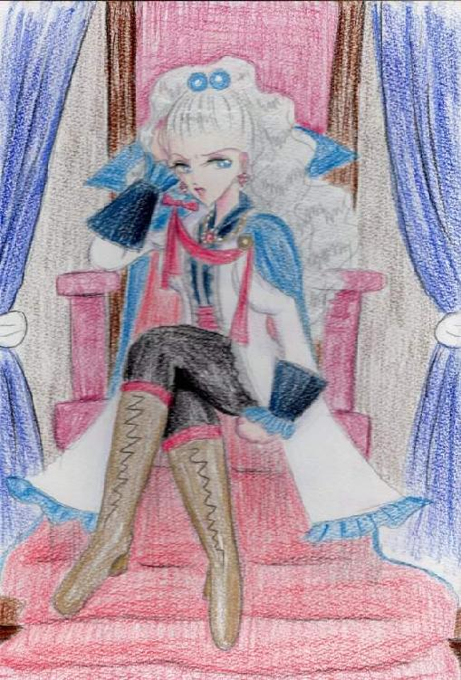
アンドゥーシャは確認を急いだ。クイゼ山の遺跡は確かに蘇りまた川は酸性へと戻っていく。人々は発掘王は一夜で人々を殺戮し更に死の川を蘇らせたと持ちきりになった。アンドゥーシャは確かに遺跡を止めた。だがアンドゥーシャがした事は過去の人間がいつもやっていた事をまねただけでその作業を理解していたわけではなかった。何をしたのか本人さえも知らないのだ。遺跡を止める場合過去の人間たちが何をしたのかまねただけ、それだけだった。ブレインを破壊したかなんて誰も確認していなかったのだ。
「いいわ。過去の事は先送りでいい。先に手を出したのは南よ。私は国を、家族を守るために戦う。それだけよ」
もはやアンドゥーシャは遺跡を止めることもできずする気もなかった。
不幸かな、和平論を唱えるルカは病身の身でとてもアンドゥーシャを止めることなど出来やしなかった。アンドゥーシャはルカがなぜこうも人にやさしくするのか、なぜヤマセという名に執着するのか問う気も知れなかった。
彼女の怒りはラインハルトの怒りそのものだった。自身を醜い獣と扱った人々の憎しみと絶望。例えアンドゥーシャが美しくてもラインハルトに人々が何をしたのか、フルーニャの辿るべきだった運命に、そして今傷を馬鹿にされたルカの悲しみにアンドゥーシャは軍を編成する。
もう誰も戦争の道へと歩くアンドゥーシャを止めることなどできなかった。アンドゥーシャ22歳、発掘王第二次帝国遠征が始まる。奇しくも花の季節だった。もはやアンドゥーシャの耳にはあの優しい唄も聞こえず全てを燃やしつくすがごとく行軍が進んでいた。巨像の様な遺跡兵器がアンドゥーシャの後ろで花をちぎらせ土煙を上げ突き進んでいく。
運命の輪は突如アンドゥーシャに答えを与えた。場所は忘れた世界の南と北の半分を分けるようなワッシャ湖に辿り着いたところだった。花が嵐のように飛び散り、ワッシャ湖の湖面に誰かがパステルを振りまいたようにその水面を飾る。そこに彼女がいた。
彼女は小さいな象の青いジョウロを持って唄っていた。
「～♪～～～♪」
ハミングするように彼女はアンドゥーシャの前に現れた。まだその姿は小さな女の子のようだった。アンドゥーシャの眉は怒りと悲しみでしわが満ちていたがすぐに驚きでまっさらな漂白した布のように青ざめる。今まで自分が何をしていたか、なぜ戦っていたのか、なぜ探していたのかアンドゥーシャはようやく気付いたのだ。
花はなぜ花開く？それはあなたのため。風はなびくのはなぜ？涙をふきとるため。太陽がなぜ明るい？あなたを照らすため。月はなぜ輝く？あなたを導くため。みんなあなたの為、今日も私は唄う。
訪ね人はアンドゥーシャを見つけてうれしそうに走り寄っていく。もうアンドゥーシャより小柄でまだ十歳にも満たない外見、そう風視で何度も夢見たあの人そのものだった。
風が吹きアンドゥーシャにこの女の子を読み取らせる。
彼女は世界を愛していた。平和がずっとずっと続けばいいと願っていた。彼女は世界を回し人間たちが喜んで前を向いて生きてもらおうとずっと一人っきりで働いていた。ずっとずっと一人で唄って誰にも祈りが届かずとも働き続ける。アンドゥーシャ一人に祈っていたわけではなかったのだ。この忘れた世界すべての住人に愛を注いでいた。
「あなたは・・・誰？」
アンドゥーシャはかすれる声で問う。彼女は首を振って花を千切りアンドゥーシャに手渡した。彼女に触れる。それだけで彼女が人外の存在だと分かった。それでも恐れはなかった。そんなちっぽけな事はどうでもよかったのだ。私にとって彼女はかけがいのない存在だった。時に許し、時に愛を運んで、時に勇気を与えてくれたのだ。
なんでこんな単純な事を気付かなかったのだろう。この忘れた世界の中心部ワッシャ湖に花の季節に訪れた事は生涯なかった。きっと彼女は毎年ここでみんなの為に唄っていたのだろう。彼女は皆が喜ぶことこそが願いでもあり祈りでもありそのために花の季節に世界中に花を咲かせる。
「私は・・・あなたを苦しませた？」
私が今までやってきた事はあなたを傷つけるようなことばかり。私はあなたの祈りを受け取っていたのに、この世界の住人の事を気にかけた事はなかった。私の人生は人を傷つけ関係を壊すようなことばかり。私の人生そのものが嘆きでできている。あなたはこんなに愛してくれたのに、最初は、最初からわかっていたのに私は成し遂げられなかった・・・私はおろか者だ・・・
「私は・・・間違っていた？」
彼女は首を横に振って笑顔で抱きしめてくれた。今までの疲れがとれるようだ。それだけで私は今までの人生が無駄ではなかった。そう思えた。だってあなたは世界そのものだもの。世界をあなたが守ってくれるなら、私はこの世界をよりよくしていこう。大丈夫、まだ何かできるはず・・・
私は彼女の黒髪をなぜ自分に言い聞かせるように言った。
「私はあなたの為に生きたかった・・・でもそれはできないのね。だってあなたはみんなを愛してるものね」
彼女はこくりと頷く。
「私は行くわ・・・ここから見てて、驚くほど世界をよくしていくわ・・・約束よ」
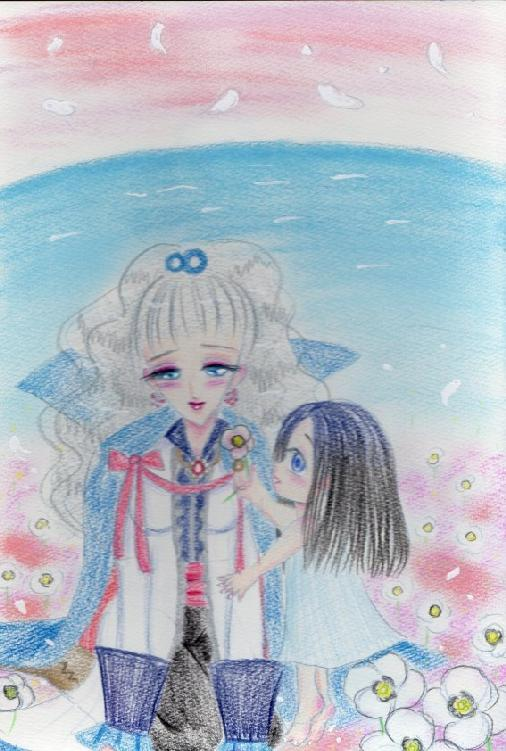
私とあの人は指きりをした。そして私は彼女に背を向けわが軍に命令を下す。
「帰るわ、我が家へ・・・」
「なぜです！敵は目前です！我々を侮辱したやつらに目の物を見せてやりましょう！！」
「・・・ふう」
アンドゥーシャは後ろを振り返る。もう誰もいない美しい湖面が広がるばかりだった。アンドゥーシャは号令を出す。
「我々の軍が勇猛かつ俊敏に動けるのは相手にはもうわかった事。無駄にここで戦って国力を削ぐのはまだ早い。隙を突かれれば我々は負けるわ。今のお前たちのように！まだ戦いは早い。いつでも戦争はできるのだ。
なら我々は帝国の増強を目指すだけ。内側から鍛えなければ巨大な体はいつか滅ぶ。南の連中はもうわかったはずだ。発掘王の恐ろしさと速さを、風の騎士ラインハルトの教えを持ってここは立ち去る。我々には守るべき家族が居るのだ。南が戦いを挑んでくればそれを打ち破ればいい。」
「・・・ざい」
「・・・・万歳！」
「発掘王万歳！！」
嵐のように軍は湧いた。彼らは祝砲を打ちながら北へ帰って行った。南の大地に住まう人間たちは発掘王の判断に恐れを抱き決して彼女に手を出すことはしなくなった。ここに北と南の奇妙な緊張関係が始まった。
帰ったアンドゥーシャの前にルカとフルーニャが待っていた。
「全くあなたって人は・・・」
ルカは包帯グルグル巻きだったが大事には至らないようだ。フルーニャが涙を貯め抱きついてくる。
「お帰りなさい！アンドゥーシャ様！」
もはやアンドゥーシャは南を攻めることは彼女を苦しめることだと気づくと北の大地にもどり内政に努めた。忘れた世界は帝国と都市国家の二つに分かれ帝国は遺跡のテクノロジー、南は水使いたちにより発展していく。
ある日アンドゥーシャはポツリとフルーニャにこう言う。
「跡継ぎが必要ね・・・・」
「そうですね～」
フルーニャはついにこんな時が来たかと落胆が襲った。いつまでも子供のころのように二人でいられる事はないのだろう。はぁとフルーニャはため息をつく。
「だから、貴女フルーニャ、子供作んなさい」
「はっ？」
アンドゥーシャは横目でフルーニャの目を合わそうともしない。
「作って」
「何でですか？」
「私、子供にあんな思いさせたくないの」
「はあ・・・？」
「とにかくよさそうな奴見つけたら作っていいから跡継ぎだからよく考えてね」
アンドゥーシャは雨に打たれる窓に映る自分を見ながら爪を噛んでいた。昔の事を思い出していた。まだ村で過ごしていたころ子供に自分の因子が引き継がれるという話を聞いた。・・・自分の子供がもし風使いだったら・・・私を風視してしまったら・・・・私の中のラインハルトをもう一人作ってしまうのだろう。もしかして風使いではないのかもしれない。でもそんなリスクありきで後継者を作るわけにはいかない。絶対に。
アンドゥーシャはこの事を組織の人間たちに伝え極秘情報とした。目が点になるフルーニャを置いて彼らは準備に追われるのだった。なんとフルーニャが選んだのはルカだった。理由は彼は優しいから。アンドゥーシャは小さな痛みを得た。どちらかに対しての痛みか分からない。ルカは何も言わず従った。ルカは参謀としての地位から登ろうとせずいつまでも表歴史に出てこなかった。こうして帝国の後継者はアンドゥーシャの血をひかなかった。
アンドゥーシャは備蓄用の食料を帝都で作った方が安心だと言って王宮にいちご畑を作っては出来た実は一人で食べつくしてしまった。
「やっぱりイチゴは最高！！」
やはり食い意地は治らなかった。
彼女はフルーニャが生んだ子を大層かわいがった。まるで自分の子のように愛おしげに抱くのだった。
「この子はきっと帝国を繁栄させるわ。わかるの・・・風がそう囁いてるわ・・・」
アンドゥーシャ30歳。急速に彼女は衰えていきベッドから出られなくなっていた。彼女の意識はそれでも明晰な意識を保っていた。このころ甘い酒を好むようになり今日もイチゴのワインを飲んでいた。能力が強すぎたせいだろうか？誰も風使いではなかったので答えはない。
「ふふふ・・・お酒を飲んでいると・・・・何もかもが夢のような気がするわ。ねえ？フルーニャ」
ベッドからフルーニャの手をさする。いつものようにフルーニャは明るく振る舞うが、とても胸騒ぎがしていた。が、押し殺す。
「そうですね～でもほどほどにしてくださいね」
「いつもあなたは私の事を気にかけてくれたわね」
「いつもの事じゃないですか」
「ありがとうね・・・・」
アンドゥーシャがフルーニャに人間に感謝の言葉を言ったのは珍しい事だった。フルーニャはぎょっとする。
アンドゥーシャは窓の向こうで遊ぶ次期皇帝を見る。すくすくと育っている。これならもう大丈夫・・・
アンドゥーシャは深いため息をつく。
あなたは幸せだった？私はあなたを幸せに出来たのかしら・・・・アンドゥーシャの眼前に一人の人間が浮かびあがってきた。アンドゥーシャは懐かしく声をかける。
「ありがとう・・・ごめんね・・・・」
死の間際にフルーニャの子孫たちに後を継ぐように言うと息を引き取る。最後の瞬間風視で見たものは何だったのか、彼女は微笑んでいた。
帝国初代皇帝、発掘王崩御。
南の町はそのころから都市国家と名乗り連合を組み帝国としのぎを上げることとなる。しかし都市国家からはアンドゥーシャの子孫である皇帝たちには手を出さなかった。結局誰もアンドゥーシャが何を守ろうとして誰に謝罪して息を引き取ったのか分からなかった。だがその魂はラインハルト共に天国の門を叩くのだろう。風は今日も世界を回って、一年後の花の季節は特に美しく咲き乱れた。
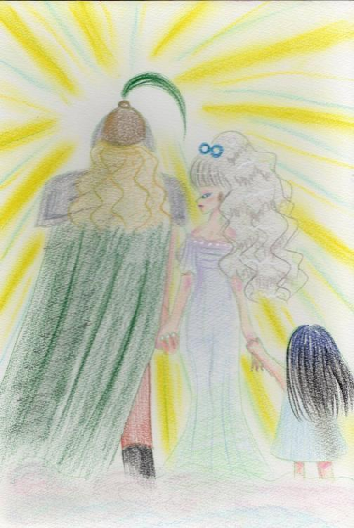
第四章 君を探す空の下で 了